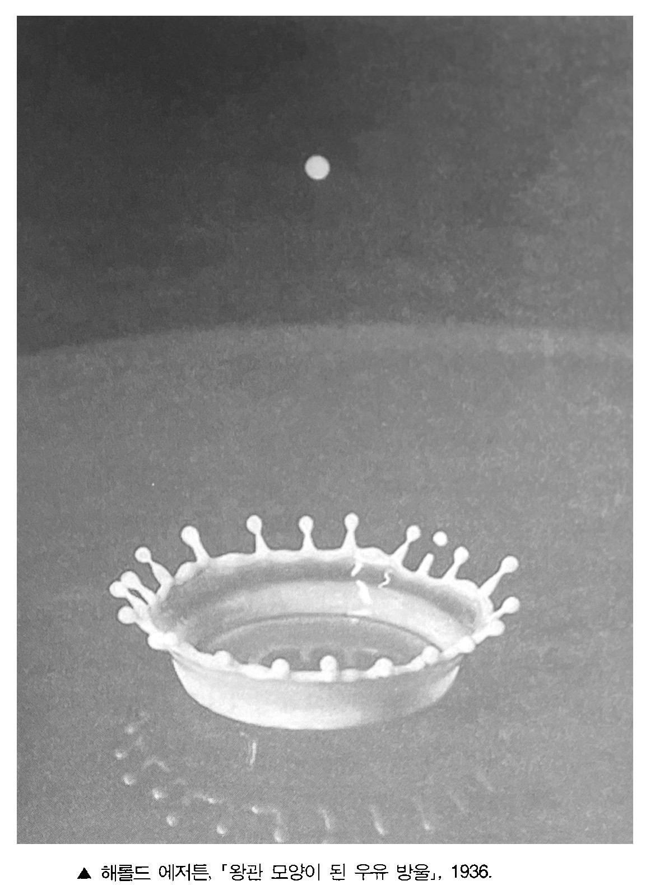
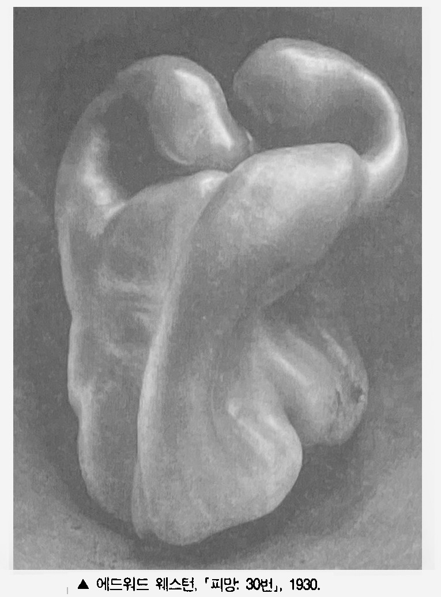
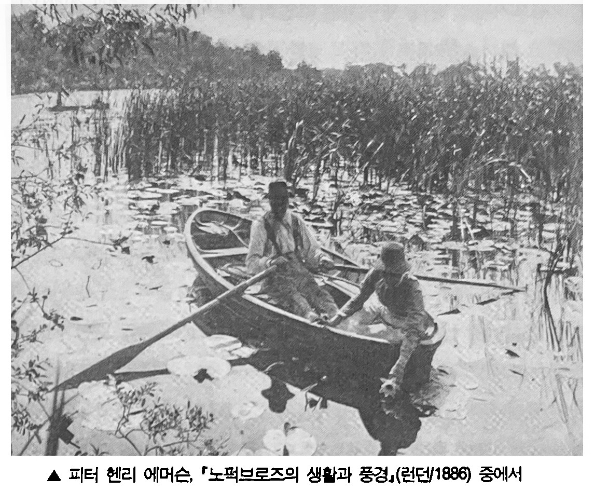
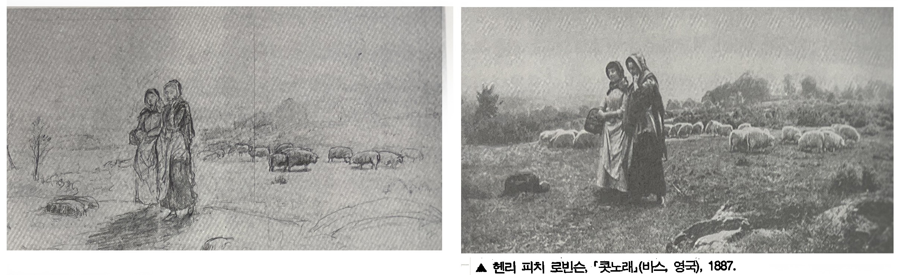
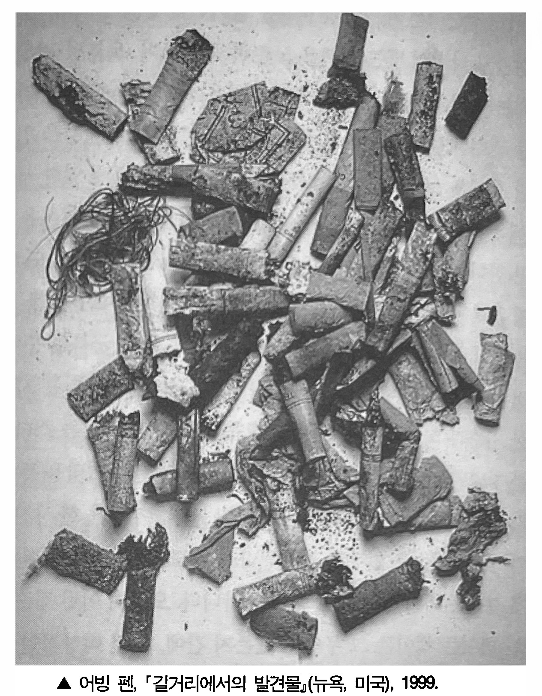
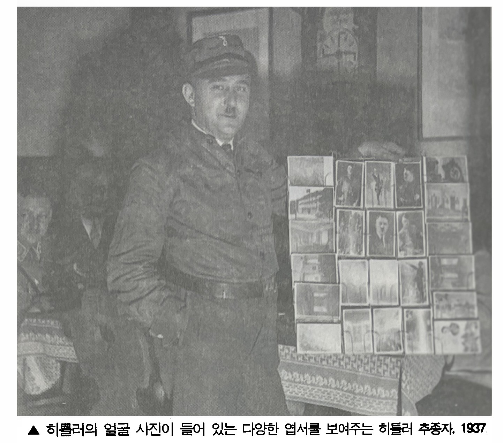
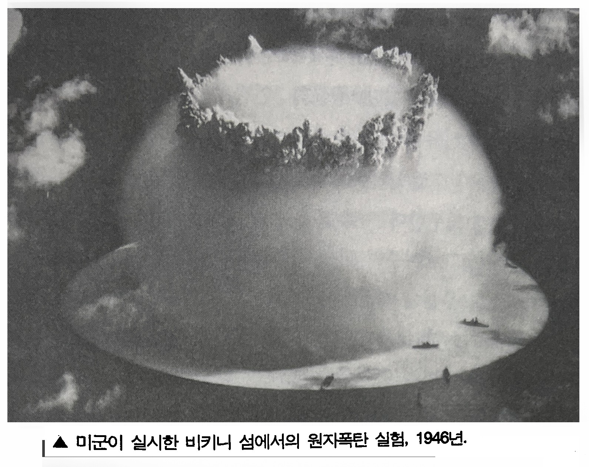
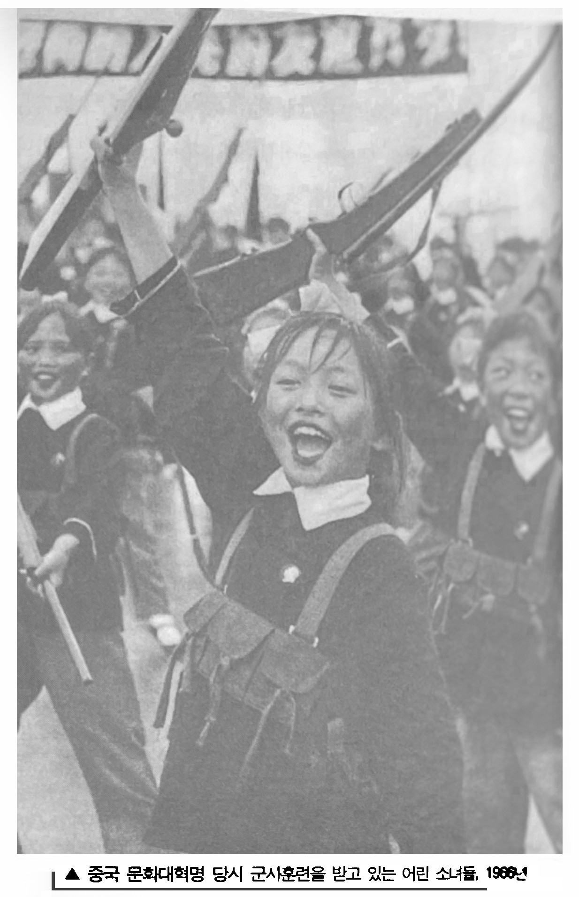
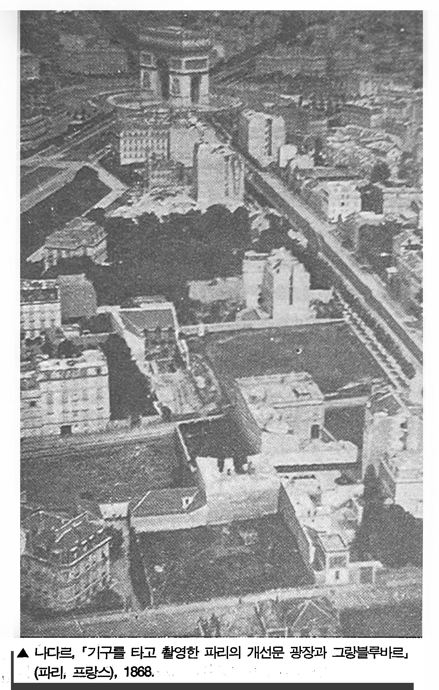

사진이 발명된 1839년 이래로 모든 것이 사진에 담겼거나, 혹은 그렇게 여겨지고 있다. 플라톤의 동글에 갇혀 지내던 우리의 상황, 우리의 세계를 뒤바꿔버린 것은 바로 이처럼 만족할 줄 모르는 사진의 시선이다. 바라보는 방식 자체를 새로 가르쳐준 사진은 무엇이 볼 만한 가치가 있는가, 우리에게 관찰할 권리가 있는 것은 무엇인가 등을 둘러싼 관념 자체도 바꿔버렸고, 더 넓혀줬다. 바라본다는 것의 근본 원리, 좀더 중요하게는 바라본다는 것의 윤리를 말이다. 결국 사진이 품었던 계획의 가장 웅대한 결과를 꼽자면, 우리로 하여금 세계의 모든 것을 우리 머릿속에 붙잡아 둘 수 있다고 생각하게끔 만든 것이다. 모든 이미지를 한데 끌어 모으기만 하면 된다고 말이다.
사진을 수집한다는 것은 세계를 수집한다는 것이다. 영화나 TV프로그램은 화면을 밝히다가도 깜박거리다 곧 사라져 버린다. 그렇지만 스틸 사진이 등장한 이래로 이미지는 일종의 오브제가 됐다. 게다가 가볍고 싸게 만들 수도 있으며, 쉽게 휴대, 적재, 보관할 수 도 있다.
우리가 현대적이라고 알고 있는 분위기를 만들어냈을뿐 아니라 실제로 사진은 포착된 경험이며, 카메라는 가장 이처럼 경험을 포착해 두려는 심리을 가장 이상적으로 이뤄주는 의식의 도구이다.
사진을 찍는다는 것은 사진에 찍힌 대상을 전유한다는 것이다. 그러니까 자기 자신과 세계가 특정한 관계를 맺도록 만드는 것인데, 이 과정을 통해서 마치 자기가 어떤 지식을 얻은 듯, 그래서 어떤 힘을 얻은 듯 느낀다는 것이다.
책에 실린 사진은 이미지의 이미지이다. 그렇지만 사진 자체가 인쇄[인화]되고 잘 다듬어진 대상인 덕택에, 아무리 책에 복제한다고 해도 사진은 회화가 책에 복제될 때보다는 원래의 본질적인 특성을 훨씬 덜 잃는다.
알프레드 스티글리츠와 폴 스트랜드처럼 수십 년에 걸쳐 도저히 잊기 힘든 뛰어난 사진을 찍어냈던 훌륭한 이미지의 거장조차도 우선은 "저쪽에 있는" 그 무엇을 보여주고 싶어했다. 이렇게 보자면 이런 거장도 즉석 카메라를 들고 다니며 수첩처럼 손쉽게 재빨리 뭔가를 기록할 수있는 것이 사진이라고 생각하는 사람이나, 브라우니 카메라로 일상생활의 순간을 찍어 추억하려는 사진광과 별다를 바 없다.
사진작가는 사진이 어떻게 보여야 할지를 결정해야 할뿐만 아니라 자기가 선호하는 노출 방식이 있기 때문에, 피사체에 특정한 기준을 들이대기 마련이다. 카메라는 현실을 해석하는 것이 아니라 있는 그대로 포착한다는 생각도 존재하지만, 사진도 회화나 데생처럼 이 세계를 해석하기는 마찬가지다. 자아의식을 싹 없앤 채 비교적 별다른 생각 없이 아무것이나 사진에 담는다해도, 사진을 찍는 행위 자체에 내재된 뭔가를 가르치려는 태도는 줄어들지 않는다. 사진으로 기록을 남기는 행위의 수동성(그리고 편재성), 바로 이것이야말로 사진이 우리에게 건네주는 '메시지'이자 사진이 드러내놓는 공격성이다.

1935년 뉴딜 정책의 일한으로 출범한 농업안정국(Farm Security Administration)은 원래 농민들에 대한 재정 지원을 임무를 띤 부서였다. 그러나 스트라이커(Roy Stricker, 1893~1975)의 주도하에 농업안정국 산하 사진단이 결성된 뒤부터는 랭(Dorothea Lnage, 1895~1965)과 에반스(Walker Evans, 1903~1975)처럼 뛰어난 사진작가들의 활동부대가 됐다. 1942년 해체될 때까지 이들이 찍은 사진은 무려 27만 2천점이었는데, 이 초대형 사진 컬렉션은 당대 지식인들에게 큰 영향을 끼쳤다.
사진은 더 이상 실재하지 않는 과거를 상상적으로 소유할 수 있도록 해줬고, 사람들이 잘 알지도 못하는 공간까지 갈 수 있도록 해줬다. 사진이 현대의 가장 독특한 활동, 즉 관광과 나란히 발전한 것도 그래서이다. 현대가 시작되자 평소의 생활공간을 떠나 정기적으로 짧게 여행 다니는 사람들이 유례없이 많아졌는데, 즐거운 시간을 보내려 여행을 떠나면서 카메라를 갖고 가지 않는다는 것은 자연스럽지 않은 일처럼 여겨졌다. 사진이야말로 자신이 진짜로 여행을 떠났고, 일정대로 잘 지냈으며, 정말 즐거웠다는 점을 확실히 증명해 줄 것이었기 때문이다.
1950~60년대에는 달러를 싸들고 다니며 속물 근성에 푹 찌들어 버릇없이 구는 미국인 관광객 이야기가 안줏거리였다면, 1970년대 초에는 엔화 가치가 과대 평가되는 기적 덕택에 감옥같은 섬에서 풀려 나와 양쪽 엉덩이에 각각 한 대씩 카메라 두 대를 넣고 다니며 신기할 만큼 집단으로 행동하는 일본인 관광객 이야기가 안줏거리였다.

호르스트 파스 미셀 로랑, '적의 협력자로 의심받고 총검으로 고문당하는 남자들, (다카, 파키스탄), 1972
원래 사진을 찍는다는 것은 상황에 개입하지 않는 활동이다. 가솔린통에 다가가는 베트남 승려, 몸통에 양팔이 묶인 이적행위자를 총검으로 찌르는 뺑골의 사진 등 인상적일 만큼 대성공을 거둔 동시대 포토저널리즘이 공포감을 자아내는 이유는 부분적으로 사진작가들이 다음과 같은 인식, 즉 사진이냐 살아있는 피사체냐를 선택해야 하는 상황에서 사진을 선택하는것도 타당하다는 인식을 갖게 됐기때문이다. 상황에 개입하면 기록할 수 없고, 기록하면 상황에 개입할 수 없다. 지가 베르토프의 위대한 영화 '카메라를 든 사나이'[4]는 사진작가의 이상적인 이미지를 보여줬다.
사진을 찍는 행위는 남을 훔쳐보며 성욕을 느끼는 관음증처럼 때로는 은밀하게 때로는 노골적으로, 현재 일어나고 있는 상황을 더욱 부추키는 방법이다. 사진을 찍는다는 것은 대상 그 자체, 지금 모습 그대로 변함없이 존재하는 대상에 관심을 기울이는 행위이며, 사진으로 찍어놓아야 할 만큼 그 피사체를 흥미롭게 만들어주는 그 무엇인가와 (예컨대 남에게는 고통이나 불행이더라도 재게는 흥미로움을 주는 상황) 공모하는 행위인것이다.
"사진을 찍는 것은 정말 못된 짓 같다는 생각이 늘 드는데, 내가 좋아하는 것 중 하나가 바로 못된 짓이다"라고 다이안 아버스는 말한 적이 있다. 그리고 "처음 사진을 찍었을 때 내 자신이 퍽 심술굿다는생각이 들었다." 아버스의 이 유명한 표현대로라면, 평판도 나쁘고 사람들이 금기시하며 주변적이기까지 한 피사체를 쫒아다녀야 하는 전문 사진작가는 못된 사람으로 여겨질 수도 있으리라. 그런데 사진 촬영의 정확히 어떤 면이 그토록 고약하다는 말일까? 어떤 전문 사진작가가 카메라 뒤에 설 때마다 자주 성적 환상을 느낀다고 가정해 보자. 이럴 경우에는 그런 환상이 그 상황에 어울리지도 않거니와 부적절하나 고약한 행위이리라.
사람들이 총알 대신에 필름을 사용하게 된 상황은 수렵 여행지였던 아프리카 동부가 사진촬영 여행지로 변해버린 상황과 일맥상통한다. 이제 사냥군들은 윈체스터 소총 대신에 하셀블라드를 들고 다니며, 총구를 겨냥하기 위해서 망원경을 들여다보는 대신에 피사체를 프레임 속에 제대로 넣기 위해서 뷰파인더를 들여다본다.
우리는 두려움에 빠질 때 총을 발사한다. 그렇지만 향수에 젖을 때면 사진을 찍는다.
오늘날은 향수를 느낄 수 밖에 없는 시대이다. 그리고 사진이 이 향수를 적극적으로 부추기고 있다. 사진은 애수가 깃들여 있는 예술, 황혼의 예술이다. 사진에 담긴 피사체는 사진에 찍혔다는 바로 그 이유로 비애감을 띠게 된다. 추하거나 기괴한 피사체조차도 사진작가의 눈길이 닿으면 그때부터 고귀해지기에 감동을 줄 수 있다. 아름다운 피사체라면 이미 오랜 세월을 보냈거나 소약해졌다거나 더 이상 존재하지 않는다는 이유로 애처로운 감정을 자아내는 대상이 될 수도 있다.
모든 사진은 메멘토 모리1이다. 사진을 찍는다는 것은 다른 사람(또는 사물)의 죽움, 연약함, 무상함에 동참하는 것이다. 그런 순간을 정확히 베어내 꽁꽁얼려 놓는 식으로, 모든 사진은 속절없이 흘러가 버리는 시간을 증언해 준다.
사진은 가장 직접적이고 실용적으로 욕망을 부추길 수 있다. 욕망에는 역사가 없다. 적어도 매순간 확연히 순간적으로 겪게되는 것이 욕망이다. 욕망은 무위식적으로 발생하며, 그런 점에서 추상적이다. 그렇지만 도덕적 감정은 역사, 그것도 구체적인 모습을 갖추고 있으며, 늘 특정한 상황에 놓여 있는 역사에 뿌리를 박고 있다. 따라서 욕망을 일깨우는 데 사진을 사용할 경우와 양심을 일깨우는 데 사진을 사용할 경우, 이 각각의 경우에는 거의 정반대의 법칙이 적용된다. 의식을 고조시키는 이미지는 주어진 역사적 상황과 늘 관련이 있는 법이다. 훨씬 더 일반적인 이미지일수록 그 유용성도 훨씬 더 감소되는 듯싶다.
움직이는 이미지보다는 사진이 기억하기 훨씬 쉽다. 사진은 시간의 흐름이 아니라 시간의 어느 한 순간을 깔끔하게 포착 해 놓은 것이기 때문이다. 테레비젼이 흐려보내는 이미지는 신중히 선택된 것이 아니다. 그래서거 뒤의 이미지가 앞의 이미지를 곧장 지워버리곤 한다. 그러나 스틸 사진은 어떤 순간을 특권화해 놓은 것으로서, 그 순간을 계속 간지한 채 몇 번이고 다시 볼 수 있는 얇은 사물로 뒤바꿔 버린다. 베트남 전쟁 당시 전쟁의 만행을 수백 시간 보여준 텔리베젼보다 훨씬 더 반전 여론을 들끓게 만들었던 것은 아마도 1972년 세계 모든 신문 제 1면을 장식햇던 사진, 즉 미군의 네이팜탄에 맞은 뒤 두 팔을 벌린채 고통으로 울부짖으며 도로로 뛰어나오던 어느 벌거벗은 남베트남 어린아이의 정면 사진이었을 것이다.

1972년 6월 8일, 남베트남군의 공군기가 자국민에게 네이팜을 투하하는 큰 실수를 저지렀다. 당시 현장을 지나가던 우트(Huynh Cong Ut, 1951~ )는 현장에서 벗어나가 위해 갈팡질팡 마을에서 뛰쳐나오던 마을 주민들의 모습을 카메라에 담기 시작했다. 그때까지만 해도 우트는 자신이 찌든 사진 중의 하나 '전쟁의 공포' 가 풀리처 상을 받으리라고는 꿈도 꾸지 않았을 것이다. 그리고 공포로 가득 찬 한 소녀(당시 9살)의 얼굴 표정이 고스란히 들어가 있는 이 사진이 미국 내 반전운동을 고조시키는 또 하나의 될 것이라는 것도.....
한 사건이 어떤 의미를 갖게 되더라도, 정확히 말해서 사진으로 찍을 만한 가치가 있는 그 무엇인가가 되더라도, 그사건을 사건으로 만들어주는 결정적인 요소는 이데올로기이다. 해당 사건 자체에 명칭이 붙어 그 성격이 규정되지 않은 한, 제 아무리 사진에 찍혔다한들 그 사건이 벌어졌다는 증거는 없는 셈이다. 그리고 사진이라는 증거가 사건을 사건으로서 만들어 주는(인정받게 해주는) 것도 아니다. 사진은 한 사건에 명칭이 붙은 다음에야 뭔가에 기여할 수 있는 것이다. 사진이 도덕적 영향력을 발휘할 수 있는냐는 그에 상응하는 정치 의식이 존재하느냐에 따라 결정된다. 정치가 없다면, 역사를 수놓은 살육 현자을 담은 사진일지라도 고작 비현실적이거나 정서를 혼란시키는 야비한 물건으로 밖에 여겨지지 않을 것이다.
단 한장의 사진으로는 아무것도 이해할 수가 없다. 카메라에 찍힌 현실에는 드러난 것 이상으로 은폐된 것도 많기 때문이다. 스틸 사진을 통해 얻게 된 지식은 냉소적이든 인간적이든 감상적일 수 밖에 없다. 그런 지식은 싸구러 지식, 즉 가짜 지식이자 가짜 지혜가 될 수 밖에 없는 것이다. 사진을 찍는 행위가 가짜 전유이자 가짜 강간이듯이. 우리가 사진에서 이해할 수 있다고 가정한 사진 속 그 무엇인가의 침묵, 그것이 사진을 매력적이고 도발적인 것으로 만들어 준다. 사진은 곳곳에 존재하기에 우리의 도덕적 감수성에 엄청난 영향을 끼친다.
사람들은 경험한다는 것을 바라본다는 것으로 자꾸 축소하려 한다. 결국 오늘날에는 경험한다는 것이 그 경험을 사진으로 찍는다는 것과 똑같아져 버렸고, 공개 행사에 참여한다는 것이 그 행사를 사진으로 본다는 것과 점점 더 비슷해져 버렸다. 19세게의 가장 논리적인 유미주의자였던 말라메르는 이 세상의 모든 것들은 결국 책에 씌여지기 위해서 존재한다고 말했다. 그렇지만 오늘날에는 모든 것들이 결국 사진에 찍히기 위해 존재하게 되어 버렸다.
미국, 사진을 통해 본, 암울한[1]사진이 등장한 초창기에는 사진이 이상화된 이미지가 될 것이라고 예견했다. 대부분의 아마추어 사진작가들은 아직까지도 이런 목적을 쫒는데, 이런 사람들에게는 여인이나 석양처럼 아름다은 무엇인가를 찍은 사진이 곧 아름다운 사진이다. 1915년 에드워드 스타이켄은 어떤 건물의 화재 비상구에 놓인 우유병을 찍었는데, 이 사진은 전혀 다른 개념의 아름다운 사진을 보여준 초창기 사례이다. 그리고 일군의 야심만만한 전문가들은 1920년대부터 서장적인 피사체를 점점 멀리 하면서, 평이하며 속되고 따분한 제재에 천착하기 시작했다.(오늘날 이들의 작품은 박물관에 소장되어 있다)

룩셈부르크 태생의 미국 사진작가 스타이켄이 찍은 이 사진은 당대의 사진계를 지배하던 '회화적 사진'에 반발해 "꾸미지 말고 솔직하게 작업할 것"을 천명한 '순수 사진Straight Photography'의 대표작이다. 스타이켄은 제2차 대전이 끝난 뒤인 1947년 뉴욕 현대미술관 창립 25주년 기념행사로 기획한[인간가족전]을 통해서 사진을 '만국의 언어'이자 '시각적 국제어Visul Esperanto'로 인식시키는 데 기여하기도 했다.

1839년 사진이 발명된 이래로 사진은 인물 사진 같이 실용적 목적을 가진 기록 사진, 그리고 창조적인 표현을 지향한 예술 사진, 이렇게 두 갈래로 갈라져 있었다. 이 두 갈래는 '순수 사진'을 주장한 스티글리츠라는 인물의 등장 이후에야 서로 통합될 가능성을 볼 수 있었다. 사진만의 광학적 속성과 기계적 기록성을 최대한 사용해(회화적 사진처럼) 인공적이지 않고, 기록 사진처럼 사진 작가 고유의 내면세계를 부정하지도 않는 작품을 선보였던 그는 '사진의 독자적 예술성'을 구축햇다는 평가를 받으며 한 시대를 풍미했다.
드러내놓고 "이상해 보이는" 사람들을 찍는 데에만 관심을 가졌던 아버스는 자신이 살던 집 근처에서 수많은 제재를 찾았다. 아버스는 이렇게 말한다. "거리에서 사람을 볼 때 제일 먼저 눈에 들어오는 것은 주로 그 사람의 약점이다." 자신이 다뤘던 것과 상당히 다른 피사체를 찍을 때에도 아버스는 일관된 공통점을 보여 줬다. 그녀가 사진에 담은 인물들은 나체주의자처럼 옷을 입지 않았거나, 나체촌에서 앞치마를 두르고 있는 웨이트리스처럼 옷을 입었기 때문에 기묘해 보인다. 아버스의 사진이 뛰어난 이유는 사진 속의 피사체가 우리의 감정을 갈기갈기 찢어놓는 듯한 데 반해 그 분위기는 냉정하고 무미건조할 만큼 정중하기 때문이다. 아버스는 괴짜와 부랑자를 쭉 염탐하다가 몰래 사진을 찍기는 커녕, 자신의 존재를 알리고 허락을 받은 뒤 사진을 찍었다. 줄리아 마가렛 카메론을 위해서 스튜디오에 얌전히 앉아 줬던 빅토리아 시대의 유명인사들처럼, 아버스의 피사차체가 된 사람들이 그녀를 위해서 조용히 뻣뻣하게 자세을 취해준 것도 바로 그래서였다. 비정상적인 괴짜를 찍은 그녀의 사진은 그사람의 고통보다는 그 사람의 초연함과 자립성을 강조하고 있다.

아버스는 이렇게 쓴 바 있다. "사진이란 원하는 곳이면 어디든 갈 수 있고, 원하는 것이면 무엇이든 할 수 있게 해주는 일종의 허가증이다." 카메라는 사진을 찍은 사람이 사진에 찍히는 사람에게 아무런 책임도 지지 않은 채, 도덕적 한계와 사회적 금기를 넘나들 수 있게 해주는 일종의 여권이다. 그 사람의 삶에 끼어드는 것이 아니라 방문하는 것, 바로그것이 누군가의 사진을 찍는다는 것의 핵심이다.
우울한 오브제[1/p87]사진은 실제와 가장 가깝고 그렇기 때문에 매우 쉽다는 별로 좋을 것도 없는 명성을 얻고 있는 모방 예술이다. 사실, 사진은 유서 깊은 다른 예술이 경쟁서 줄줄이 낙오되는 와중에서도 마치 초현실주의처럼 지난 1백여 년간 현대의 감수성을 장엄하게 장악해왔던 유일무이한 예술이다. 저마다 손으로 제작해야 하며, 그 자체가 유일한 원본인 예술, 즉 순수 예술이 되려고 했던 회화는 애초부터 약점을 안고 있었다. 초현실주의가 관여한 예술로는(회화보다 만족할 만했지만, 다룰 수 있는 주제가 훨씬 풍부하고 복잡했던)산문, 연극, 아상블라주, 사진이 있는게 그 중에서 가장 성공한 것은 사진이었다.
원래부터 초현실적인 예술은 사진밖에 없다고 해서 사진이 공식적인 초현실주의 운동과 운명을 같이 한 것은 아니다. 오히려 정반대이다. 오늘날, 초현실주의의 영향을 의식적으로 받아들인 사진작가들(데부분 전직 화가였다)은 순수 회화를 모방해 '회화 같은' 사진을 찍었던 19세기의 사진작가들처럼 별로 중요시되지 않고 있다.
1920년대의 뛰어난 걸작들-솔라리제이션과 레이요그램 기법2을 쓴 만 레이의 사진, 라즐로 모홀리나기의 포토그램, 브라가글리아가 연구한 다중 노출, 존 하트필드와 알렉산드르 로드첸코의 포토몽타쥬-조차도 사진의 역사에서는 주변적인 업적으로만 여겨지고 있다.

자신들이 피상적이라고 여긴 사진의 리얼리즘을 방해하는 데 몰두했던 이 사진작가들은 오히려 사진의 초현실적인 특성을 가장 편협하게 전달해 왔다. 초현실주의가 사진에 남겨준 유산은 초현실주의가 주로 선보인 환상이나 각종 소도구가 1930년대의 첨단 유행이 급격히 흡수됐듯이 곧 시시한 것이 되어버렸다. 게다가 초현실주의 사진은 초상화 같은 양식화된 스타일만을 남겨놓게 됐는데, 이것은 초현실주의의 화화, 연극, 광고 같은 다른 예술에 장식처럼 도입해 써먹곤 했던 갖가지 관행과 하등 다를 바 없는 것이었다. 사진 활동의 대세도 현실을 조작하거나 극화하는 초현실주의의 기법이 지나치게 장황한 것으로 여겨지거나 불필요해지는 쪽으로 흘러가게 됐다. 사진은 조작이 덜되어 있고 솜씨를 부렸다는 것이 덜 분명해 보일수록 더 솔직하게 보인다. 게다가 그 권위도 훨씬 더 높아지는 듯하다.
초현실주의는 항상 사건을 일으켰고, 우연을 반겼으며, 무질서를 즐겨 왔다. 실질적으로, 그것도 최소한의 노력으로 자기 자체를 직접 만들어내는 오브제보다 더 초현실적인 것이 있을까? 자신에게 들어닥친 우연 덕택에 훨신 더 환상적으로 제 모습을 드러낼 뿐만 아니라, 그 아름다움과 정서적 효과까지 훨씬 더 고양되는 오브제보다, 어느 위대한 초현실주의 시인이 아름다움의 본보기라며 환호성를 내지른 저 우발적인 만남, 죽 재봉틀과 우산의 병치가 어떻게 가능한지 가장 멋지게 보여줬던 것은 사진이다.
버스트 키튼은 '카메라맨'(1928)이라는 무성영화를 통해서 [사진을 둘러싼] 이런 신화를 완곡히 풍자한 바 있다. 매일 공상에 빠져 지내는 우리의 주인공은 기계를 다루는 데 서툴러 삼각대를 집어들 때마다 창문과 문에 부딪치면서도, 망가져 버린 자신의 기계와 쓸데없이 씨름한다. 그렇지만 쓸만한 사진을 한 장도 찍지 못하던 우리의 주인공은 결국 엄청난 장면을 찍게 된다(뉴욕 차이나타운의 중국인 조직 폭력배들간에 벌어진 싸움을 찍어 특종을 거둔다). 그것도 실수로. 그런데 알고 보니, 카메라에 필름을 넣고 싸움이 벌어지는 동안 카메라를 작동시켰던 것은 주인공의 애완용 원숭이였다.
초현실주의의 신봉자들은 초현실적인 것을 보편적인 그 무엇으로, 즉 일종의 심리학적 문제로 여기는 잘못을 저질렀다. 정작 초현실적인 것은 한정된 계급의 지극히 지엽적이고 인종적이며 낡아빠진 취향에 불과했음이 판명됐는데도 말이다. 예를 들면, 초현실적 사진이 등장한 시기는 당대의 사진작가들이 자연스러운 삶의 단면을 찾으려고 맨 처음 런던, 파리, 뉴욕의 거리를 어슬렁거린 1850년대로까지 거슬러 올라갈 수 있다. 프로이트의 충실한 신봉자답게, 자신들이 찾은 이미지는 무의식에서 나온 것이라고 믿었던 초현실주의자들은 그 이미지의 내용이 당연히 보편적이고 영원하리라고 믿었다. 그러나 초현실주위자들은 거칠게 움직이기에 전혀 동질화시킬 수 없는 비합리적이고 불가사의한 것, 즉 시간 그 자체를 제대로 이해하지 못했다. 어떤 사진을 초현실적으로 보이게 만들어 주는 것은 그 사진이 자아내는 도저히 뿌리칠 수 없는 파토스(이것은 과거의 시간이 보낸 일종의 메시지이다)이며, 자기 자체가 어느 계급에 속해 있는지를 은근히 암시해 주고 있는 그 사진의 구체성이다.
호기심, 초연함, 직업 정신으로 이곳저곳에서 타인의 현실을 주시허는 사진작가는 자신이 계급적 이해관계를 초월해 행동하고, 보편적인 시각을 지닌 듯이 활동한다. 사실, 사진은 애초부터 중간 계급에 속한 만보자3의 눈을 확장시켜주는 도구였다. 보들레르는 이 만보자의 감수성을 정확하게 묘사한 바 있다. 도시라는 지옥을 한가로이 거닐 듯 떠돌며 관찰하는 외로운 보행자, 즉 도시가 지극히 육감적인 장소라는 사실을 깨달아 가는 이 관음적 방랑자가 도구[즉,카메라]를 쥐게되면 곧 사진작가가 되는 것이다. 지켜보는 즐거움을 잘 알고 있을뿐만 아니라 감정을 이입하는 데도 뛰어난 만보자는 이 세계가 참으로 '사람들의 눈길을 끌만하다'는 것을 깨달아간다. 숨겨진 짐실을 밝힌다거나, 사라져 가는 과거를 보존한다거나 하는 고귀한 목적에 봉사한다는 이유로 사진 촬영을 정당화하는 것은 예나 지금이나 똑같다.
가난은 더 이상 부보다 초현실적이지 않다. 누더기를 걸쳤다고해서, 왕녀 같은 야회복을 입었거나 원시인처럼 발가벗은 사람보다 초현실적인 것은 아니다. 초현실적이라는 것은 사진이 제시하고 이어주는 거리감, 예컨대 사회적이거나 시간적인 거리감이다. 즉 사진을 대하는 중간 계급의 관점에서는 부랑자의 사진도 유명인사의 사진만큼 흥미롭다. 따라서 사진작가가 정형화된 제재에 굳이 역설적이고 지성적인 태도를 취할 필요는없다. 지극히 상투적인 피사체도 경건하게 존경할 만한 매력을 내뿜을 수 있으니.
굳이 말하지면, 리처드 아베든의 신비한 사진이 무솔리니 시대의 유명인사를 찍은 헝가리 출신의 사진작가 지타 카렐의 사진보다 더 뛰어난 것은 아니다. 오리려 그녀의 인물 사진은 오늘날 아베든의 인물 사진만큼이나 기발해 보이며, 초현실주의 영향을 받은 그녀의 동료 세실 비통의 사진보다 훨씬 초현실적으로 보이기까지 한다. 비통은 자신의 피사체를 환상적이고 화려한 배경에 세워두곤 했기에 피사체를 일종의 우상처럼 보이게 만들었다. 카렐의 사진은 자신의 피사체였던 이탈리아의 장군, 귀족, 배우 등이 원하는 대로 정적이고 화려한 자세의 모습을 찍었기에 그의 사진은 피사체의 원래 모습을 제대로 정확히 보여준다. 오히려 피사체를 존중했기에, 카렐은 피사체가 더 흥미롭게 보일 수 있도록 만들었다. 그리고 세월은 이들을 순하고 지극히 인간적인 사람처럼 보이게 만들었다.
이 세상에는 과학자처럼 행동하는 사진작가도 있고 도덕주의자처럼 행동하는 사진작가도 있다. 과학자는 세계를 분류하고 도덕주의자는 역경에 집중한다. 아우구스 잔더가 1911년부터 착수한 프로젝트, 즉 독일 민족을 사진으로 분류하려는 계획은 과학을 위해서 사진을 활용한 예이다. 잔더의 '원형적 사진'(잔더는 자신의 작업을 이렇게 불렀다)은 19세기 골상학, 범죄학, 정신의학, 우생학 같이 편파적이기 그지없는 유형학이 내세웠던 유사-과학적 중립성을 띠고 있다.
1880년대 경 피사체의 운동을 찍은 각 사진이 쭉 이어지도록 정확히 세분해 늘 봐왔던 것(말이 달리는 방법, 사람이 움직이는 방법)을 둘러산 세인들의 오해를 불식시킨 이드위어드 머이브리지처럼, 잔더도 사회를 세분해 유형별로 나누는 식으로 사회 질서을 파악하려고 했다. 잔더의 사진집 "우리 시대의 얼굴"이 출간된지 5년 뒤인 1934년, 나치는 남아 있던 그의 책과 인쇄판을 압수해 파괴해 버렸다. 그러니 한 국가의 모든 인물 사진을 찍으려 했던 그의 계획이 갑자기 중단된 것도 놀랄 일은 아니다.(나치 시기에도 독일에 남았던 그는 풍경 사진으로 작업 방향을 바꿨다) 그의 계획은 반사회적이라는 이유로 단죄됐다. 아마 나치에게는 사진작가를 냉정한 인구조사원처럼 여긴 그의 태도는 물론, 쓸데없는 것까지 모조리 기록해 설명하고 비판하려 했던 그의 완벽함까지 반사회적이었으리라.
잔더는 자신도 모르게 자신의 스타일대로 온갖 계급의 사람을 찍었던 것이다. 그는 전문직 종사자들과 부유한 사람들의 사진을 찍을 때에는 별다른 소도구 없이 실내에서 찍는 경향이 있었다. 예컨대 이들은 스스로 자신들을 말하는 것이다. 그러나 노동자들과 낙오자들의 사진을 찍을 때에는(이들의 사진은 대개 야외에서 촬영되었는데)뭔가 배경[무대]을 꾸미곤 했다. 즉 이들에 대해서 말해 주는 것은[이들 자신이라기보다는] 바로 이 배경이었다. 간단히 말해서 중간 계급과 상류 계급은 자신들만의 독립된 정체성을 갖고 있지만 노동자들과 낙오자들은 그런 정체성을 지닐 수 없다는 듯이 취급됐던 것이다.
잔더의 사진에서는 모든 사람이 각자의 위치에 자리잡고 있을 뿐, 그 누구도 제 자리를 못 찾거나 벗어나는 법이 없으며 균형을 잃지 않는다. 크레틴병4 환자도 벽돌공과 똑같이 냉정한 모습이고, 제1차 세계대전에서 다리를 잃은 상이용사도 제복을 입은 젊은 병사처럼 건강하게 보인다. 뭔가 언짢은 낯을 한 공산주의자 학생도 미서짓는 나치 대원의 모습과 비슷하며, 공장 감독관도 오페라 가수와 다름없은 모습이다. "사람들을 비판하거나 묘사하는 것이 내 목적은 아니다"라고 잔더는 말했다.

아우구스트 잔더, '우리 시대의 얼굴' (베를린/1929) 중에서
잔더처럼 광범위한 분류 작업을 시도한 미국인은 별로 없다. 가난한 사람들과 약탈당한 사람들, 즉 국가에서 잊혀진 시민들을 사진으로 기록해 두려는 전통적 욕구를 계속 반영하고 있긴 했지만, 미국의 위대한 인물 사진들-워크 에반스의 '미국사진(1938)과 로버트 프랭크의 '미국인들'(1959)등-은 별다른 계획없이 제작되곤했다. 미국에서 진행된 집단사진 중 가장 야심 만만했던 작업, 즉 로이 에머슨 스트라이커의 지휘아래 1935년 농업안정국이 전개했던 작업도 '저소득층'에게만 관심을 기울였다.*
1895년부터 1904년까지 애리조나 주와 뉴맥시코 주에서 인디언들을 찍었던 애덤 클라트 브로맨의 멋진 사진은 과시적이거나 감상적이지도, 생색을 내지도 않는다. 오히려 그의 사진은 농업안정국의 사진과 정반대 분위기를 띤다. 그의 사진은 감동적이지도, 독특하지도, 연민을 불러일키지도 않는다. 인디언들을 위해서 뭔가를 선전하려고도 하지 않는다. 잔더는 자신이 사라져 가고 있는 세계를 찍고 있다는 사실을 알지 못햇으나, 브로맨은 일고 있었다. 그리고 브로맨은 자신이 기록하고 있는 그 세계가 이제는 더 이상 구원받을 길이 전혀 없다는 사실까지 알고 있었다.
유럽의 사진은 주로 사람들의 눈길을 끌 만한가(가난한 사람들, 이국적 모습, 지나간 시간), 중요한가(부유한 사람들, 유명한 사람들), 아름단운가 같은 관념에 좌우된다. 흔히 사진은 중립성을 높이 평가하거나 목표로 삼는 경향이 있다. 특정 사회 질서가 영원하리라고 믿지 않는 미국인들, 변화의 필연성뿐만 아니라 '현실'에도 익숙한 미국인들은 흔히 당파성이 강한 사진을 찍는 경향이 있다. 예컨대 무엇을 존중해야만 하는지 보려 주려고 할뿐만 아니라 무엇을 직시하고 개탄할 필요가 있는지(그리고 고칠 필요가 있는지) 제시하려고 사진을 찍는 것이다. 미국의 경우, 사진을 찍는다는 것은 역사와 견고한 관계를 맺는다기보다는 역사를 요약한다는 뜻이다. 그리고 지리적이거나 사회적인 현실에 관여한다는 뜻인데, 이것은 훨씬 희망적인 동시에 훨씬 약탈적인 면모를 띠기도 하다.
사진의 약탈적인 면모는 사진이 관광과 맺은 동맹 관계에서 잘 볼 수 있는데, 특히 이 동맹은 미국에서 제일 먼저 이뤄졌다. 1869년 대륙횡단 철도의 완공으로 서부시대가 열리자, 이지역은 카메라를 통해서 식민지화 되어갔다. 특히 아메리카 인디언의 경우가 가장 잔인했다. 브로맨처럼 심중하고 진지한 아마추어 사진 작가는 남북 전쟁 이후부터 인디언의 사진을 찍었다. 예컨대 아마추어 사진 작가는 19세기 말경 서부로 우르르 몰려가 인디언의 삶을 "멋지게" 사진으로 찍는 데 열중한 관광객들의 전위였던 셈이다. 이들은 인디언이 신성시하는 물건과 장소, 종교 행사 때 추는 춤 등 사진으로 찍으면서 인디언의 사생활을 침해했다. 필요하다면 자세를 취해 달라고 인디언에게 돈을 쥐어주거나, 좀 더 멋진 사진을 찍을 수 있게 전통 의식을 재현하도록 만들면서까지 말이다.
그러나 관광객들이 떼지어 휩쓸고 간 뒤 변해버린 인디언의 전통 의식은 누군가가 사진으로 찍은 뒤 바로잡히게 된 대도시의 추문과 하등 다를 바 없다. 추문을 캐러 다니는 사람들이 소기의 성과을 거두는 한, 그들이 사진으로 찍은 대상 자체가 변해버리기 마련이다. 사실, 어떤 대상의 사진을 찍는다는 것은 그 대상을 변하게 만든다는 것이기도 하다. 아무리 사소한 변화일지라도 위험, 가령 사진의 피사체를 협소하게 이해하도록 만드는 것 같은 위험을 가져오는 법이다. 1880년대 말 리스가 사진에 담은 뉴욕의 빈민가 멀베리 벤드는 훗날 헐리게 됐고, 그곳 주민들은 당시 주지사였던 시어도어 루스벨트의 지시로 새 집을 갖게 됐다. 그렇지만 멀베리 벤드 못지 않게 끔찍했던 또 다른 빈민가들은 그대로 방치됐다.
사진 작가들은 약탈하면서 보존하고, 고발하면서도 신성시한다. 사진은 성마르게 현실을 대하고 기계를 사용한 활동을 즐기는 미국인들의 특성을 잘 보여준다. 1923년 하트 크레인은 스티글리츠를 다룬 글에서 이렇게 말했다. "속도가 가장 중요하다. 100분의 1초까지 정확하게 포착해내는 속도, 그래서 그 순간의 움직임이 사진 안에서 무한정 지속될 수 있는 속도, 순간이 곧 영원을 만든다." 신대륙의 놀라은 광활함과 낯선 모습을 마주 대하자, 사람들은 자신이 방문한 장소를 소유라도 하려는 듯이 카메라를 휘두르고 다녔다. 카메라 제조회사 코닥은 사진으로 찍을 만한 것의 목록을 적어놓은 간판을 마을 입구마다 세워두기까지 했다. 국립공원이 사진으로 찍기 좋은 장소가 표시된 간판을 세워두듯이 말이다.
사진은 과거에 대한 낭만주의(극단적이든 아니든)뿐만 아니라 현재에 대한 찰나적 낭만주의 제공해준다. 미국에서는 사진작가가 그저 과거를 기록하는 것만이 아니다. 과거를 발명하기도 한다. 그래서 베레니스 에벗은 이렇게 말한 것이다. "사진작가란 당대의 가장 뛰어난 사람이다. 그의 눈을 통하면 현재가 과거로 변해버리니 말이다."
만 레이에게 수년간 도제생활을 했고, 당시 거의 알려지지 않았던 외젠 앗제의 작품을 발견(구원)한 뒤 1929년 파리에서 뉴욕으로 돌아온 애벗은 뉴욕의 모습을 기록하기 시작했다. 1939년 출간된 자신의 사진집 '변해 가는 뉴욕'의 서문에서 그녀는 이렇게 말했다. "미국을 떠나지 않았더라면 뉴욕을 사진에 담고 싶어하지 않었을 것이다. 그러나 새로운 시각으로 뉴욕을 보게 되니 뉴욕이 나의 고향이며, 사진으로 남겨야만 할 도시라는 걸 알게 됐다." 그녀의 목적은 1898년부터 1927년 사망할 때까지 세월에 시달려 사라져 가고 있던 피리의 모습을 끈기 있게, 그리고 남몰래 작은 사진으로 기록했던 앗제의 목적을 연상시킨다. 그렇지만 그녀는 뭔가 훨씬 더 환상적인 것을 기록해뒀다. 즉, 새것이 끊임없이 바뀌는 광경을. 1930년대의 뉴욕은 파리와 무척 달랐다. 그녀는 과거를 기념하려고 하기보다는 스스로를 파괴하는 고질적인 병을 앓고 있는 미국이 지난 10년간 겪어온 모습을 기록해 두려고 했을 뿐이기 때문이다.
과거를 소모품으로 바꿔버리는 사진은 일종의 지름길이다.사진을 수지한다는 것을 초현실주이자처럼 현실을 몽타주하고 역사를 생략해 버린다는 것이다. 온갖 폐품으로 멋진 오브제, 회화, 환경예술을 만들어 냈듯이, 우리도 이제 온갖 폐기물을 활용해 역사를 만들고 있다. 미국은 이제 발견된 오브제가 넘쳐나는 초현실적인 나라가 된 것이다. 우리의 잡동사니가 예술이 되어 버렸고, 우리의 부스러기가 역사가 되어 버렸다.
사진은 한 웅큼의 환상이자 한 뭉치의 정보이다. 사진은 풍요롭고, 낭비를 일삼으며, 만족할 줄 모르는 사회의 본질적인 예술이 됐다. 그러니까 남북 전쟁이래 미국에서 모습을 갖춰나가기 시작했고, 제 2차 세계대전 직후에야 유럽을 정복했던 새로운 대중문화의 필수 도구가 된 것이다.
역사를 헐값에 사들이려 한 이 초현실적인 방법은 겉으로는 탐욕과 오만함을, 속으로는 우울함을 드러내고 있다. 사진의 초창기인 1830년대 말, 윌리엄 H. 폭스 탈보트는 사진이 '시간의 상처'를 기록하는데 특히 적합하다고 말함 바 있다. 탈보트가 말한 것은 낡은 건물이나 기념물에 생긴 상처였다. 그렇지만 우리는 돌의 마멸보다는 육신의 마멸에 더욱 흥미를 보인다. 우리는 사람들이 나이 들어가는 현실을 사진을 통해서, 가장 은밀하고 괴로운 방식로 주시한다. 자신이 잘 알고 있는 사람이든 자주 사진에 찍히는 공인이든, 어떤 사람의 낡은 사진을 바라보는 이유는 무엇보다도 뭔가를 느끼기 위해서다. 가령 그때에는 내가 얼마나 젊었던가를 사진은 죽음을 낱낱이 기록해 둔다.
오늘날 오래된 사진을 새로운 맥락에서 복권시키는 것은 중요한 출판 산업이 됐다. 사진은 일종의 파편에 불과한 것으로서, 세월이 지나면 사진 안에 고정되어 있던 내용도 떨어져 나간다. 사진은 이리저리 떠돌다가 아늑하고도 추상적인 과거가 되어버리기에 다양하게 읽힐 수 있게 된다. 사진은 일종의 안용구이기도 하기에, 사진을 모아놓은 책은 인용구를 모아놓은 책이나 마찬가지이다. 사진을 책에 담아 발표하는 일이 빈번해지면서 사진 자체가 인용구와 대등해진 것이다.
밥 아델만의 "몰락하는 고향"(1972)이 좋은 예이다. 이 책은 1960년대의 5년 동안 미국에서 가장 빈곤한 앨라배마의 농촌 모습을 찍어 놓은 사진집이다. 인생의 패배자들을 호의적으로 기록해 놓은 그의 책은 "이제 유명한 사람들을 찬양하자"(정확히 말하면 이 사진집의 피사체는 유명한 사람들이 아니라 잊혀진 사람들이다)를 계승하고 있다. 그러나 에반스는 물납 소작농의 생활상을 담은 자신의 사진에 독자들이 좀 더 공감할 수 있게 만들려고 제임스 에이지의 유려한 산문(때로는 장황한)도 함께 실었다.

초현실주의는 기괴한 것을 보편화해 거기에서 뉘앙스(그리고 매력)을 발견하는 예술이다. 그리고 사진 촬영은 초현실주의처럼 사물을 바라보는 데 훨씬 적합한 활동이다. 따지고 보면 우리는 사진을 초현실적으로 바라본다. 우리는 옛 사진을 찾으려고 다락방, 시립, 주립 역사학회의 문서보관소 등을 샅샅이 뒤지곤한다. 현대 문명을 유리한 위치에서 급진적으로 비판할 수 있는 새롭고 멋진 전략을 약속한 초현실주의자들은 모든 형적을 역사와 동일시하는 역설에 쉽게 빠져들고 말았다. 초현실주의는 반동적인 얘기만을 들려준다. 역사에서 진기함, 농담, 죽음의 여행 같은 것만을 찾아내는 것이다.
음침한 공장 건물과 광고판으로 뒤덮인 거리도 카메라의 눈을 통해서 바라보면 교회나 전원 풍경만큼 아름다워 보인다. 현대적인 취향으로 보면 더 아름답기까지 할 것이다. 중고품 가게야말로 전위적 취향의 신전이며 벼룩시장을 찾아가는 것은 미적 순례나 마찬가지라고 주장한 사람들은 안드레 브르통같은 초현실주의자들이라는 사실을 기억하라. 초현실주의자외 비슷한 넝마주이는 예민한 감수성으로 다른 사람들이 추하다고 어긴 것, 흥미롭지도 않고 가치 있지도 않다고 생각한 것(고물, 유치하거나 통속적인 오브제, 도시의 잡동사나 등)에서 아름다움을 찾아낸다.
인용을 통해서 산문 픽션, 회화 영화 등을 구성하는 방법이 초현실주의 특유의 취향이듯이, 최근들어 거실이나 침실 벽에 복제된 그림 대신 사진을 걸어놓는 유행도 초현실주의의 취향이 널리 확산됐다는 지표이다. 사진은 초현실주의가 오브제의 조건으로 내세운 여러 기준(도처에 널려 있을것, 값이 쌀것, 별로 호감이가지 않을 것)을 만족시킨다. 회화는 의뢰를 받아 제작되거나 구매된다. 그러나 사진은(앨범이나 서랍에서)발견되고, (신문과 잡지에서) 오려지며, 쉽사리 찍을 수도 있다. 게다가 오브제로서의 사진은 회화로서는 꿈도 못꿀 방법으로 대량 생산될 수 있을뿐만 아니라, 어떤 면에서는 원래의 아름다움이 파괴되지도 않는다. 밀라노에 소장되어 있는 레오나르도 다빈치의 "최후의 만찬"은 오늘날 상태가 그다지 좋아 보이지 않는다. 오히려 상태가 아주 나빠졌다. 그렇지만 사진은 낡거나, 변색되거나, 얼룩지거나, 손상되거나, 빛이 바래도 괜찮아 보이고, 종종 더 좋아 보이기까지 한다(이렇게 보면 사진은 건축과 유사한 예술이다. 건축물도 세월이 흐르수록 더 훌륭해 보이니 말이다. 파르테논 신전 같은 여러 건축물은 폐허일 때가 더 멋져 보이기까자 한다).
현실에 대한 불만을 공공연히 내비쳤던 초현실주의는 정치력이 중요하고, 카메라가 좌지우지하는 산업화된 세계의 사람들이 오늘날 일반적으로 보여 주는 태도, 즉 소외감을 예견해 왔다. 도대체 왜 현실은 불충분하고, 단조롭고, 지나치게 질서 잡혀 있고, 피상적으로만 합리적이라고 여겨지게 된 것일까? 한때 현실에 대한 불만은 또 다른 세계를 향한 갈망이었다.
사진은 필연적으로 현실과 모종의 거래를 한다. 이 세계는 '저 밖에' 있기 때문에 카메라 '안으로' 들어올 수 있는 것이다. 영화의 한 장면을 따오는 것과 책의 한 구절을 따오는 것은 전혀 같지 않다. 어떤 책을 읽는 시간은 독자에게 달려 있다. 그렇지만 영화를 보는 시간은 영화 제작자가 결정하고, 영상도 어떻게 편집됐느냐에 따라 빠르거나 느리게 인식될뿐이다. 따라서 한 순간을 마음만 내키면 오랫동안이라도 볼 수 있게 해주는 스틸 사진은 영화와는 상반된 형태를 갖고 있다. 삶이나 사회의 특정한 순간을 정지시켜 놓은 사진이 일련의 과정, 예컨대 시간에 따라 흘러갈 수밖에 없는 삶이나 사회와 상반된 형태를 갖고 있듯이 말이다. 사진에 찍힌 세계는 늘 똑같은 모습으로 존재한다. 그리고 스틸 사진이 영화와 부정확한 관계를 맺듯이, 현실 세계와 부정확한 관계를 맺을 수 밖에 없다. 삶에서는 모든 순간이 중요하거나, 빛을 발하거나, 영원히 고정되어 일이 일어나지 않는다. 그렇지만 사진에서는 그런일이 발생한다.
문화의 급진주의자, 더 나아가서는 혁명가가 되고 싶어한 초현실주의자들은 자신들이 맑스주의자가 될 수 있고, 실제로 그렇게 되어야만 한다는 선의의 오해에 종종 빠져들곤 했다. 그러나 초현실주의의 미학은 지나칠만큼 아이러니로 가득 차 있었기에 20세기의 가장 매혹적인 도덕주의와 양립할 수 없었다. 맑스는 세계를 변화시키려고 하기보다는 세계를 해석하려고만 한다는 이유로 철학을 질책하앴다. 그렇지만 초현실주의적 감수성의 테두리 안에서만 작업을 해온 여러 사진작가는 세계를 해석하려는 노력조차도 공허할뿐이라고 주장하면서 그보다는 세계를 수집해야 한다는 제안을 내놓았다
시각의 영웅주의[1/p111]사진을 통해서 추한 것을 찾으려는 사람은 없다. 사진은 아름다움을 창조하지만(사진을 너무 많이 찍어서)고갈시키기도 한다. 예컨대 저 아름다운 자연도 지칠 줄 모르는 아마추어 사진광들의 손길에 무릎을 굽히지 않았던가. 이렇듯 이미지가 범람하게 되면 저녘놀까지도 진부해 보이는 법이다. 슬프게도, 오늘날 저녘놀은 사진처럼 보이기까지 한다.
막 사진에 찍히려 할 때, 대부분의 사람은 안절부절못한다. 미개인처럼 자신의 영혼이 유린될까 두려워해서가 아니라 카메라에 자기 모습이 잘 잡히지 않을까 해서이다. 사람들은 이상화된 이미지, 즉 자기 모습이 제일 잘 나온 사진을 좋아한다. 그래서 실제 모습보다 더 매력적이게 사진이 나오지 않으면, 왠지 질책이라도 당한 느낌을 갖는다. 그러나 '사진을 잘 받는 사람.' 즉(화장이나 조명의 도움이 없어도) 실물보다 사진이 더 멋져 보이는 행운을 누리는 사람은 별로 없다. 흔히 사진은 솔직하고 정직하다는 이유로 찬양을 받기도 한다.
1840년대 중반 폭스-탈보트의 음-양화기법이 다게레오타입을 대체하기 시작한지 10년 뒤, 독일의 한 사진작가가 네거티브 수정 기법을 처음 고안해냈다.5 1855년 파리 만국박람회에 선보인 동일인물의 사진 두 장은 관람객들을 놀라게 만들었다. 이렇듯 카메라가 남의 눈을 속일 수도 있다는 소식이 알려지자, 사람들은 사진을 더 많이 찍게 됐다.
이런 수정 기법은 회화보다는 사진에서 훨씬 더 중요한 결과를 가져올 수 밖에 없었다. 그도 그럴 것이 사진은 자신이 담고 있는 내용이 사실이라고 주장했지만, 회화는 감히 그런 주장을 할 수 없었기 때문이다. 위조된(거짓된) 회화는 예술사를 왜곡한다. 그렇지만 위조된 사진(수정되거나 변조된 사진, 사진설명이 거짓인 사진)은 현실을 왜곡한다. 사진의 역사는 두 가지 상이한 원칙-순수예술에서 유래된 미화의 원칙과 진실을 말하라는 원칙이 벌인 투쟁의 역사이기도 하다.
사진은 현실을 사실적으로 재현하는 것에만 그치지 않는다. 사진이 재현해 놓은 현실은 그 사진에 충실해지기 위해서 면밀히 검토되고 평가된 현실이다. 1901년, 15년 경력의 아마추어 사진작가이기도 했던 자연주의 문학의 주창자 에밀 졸라는 이렇게 말했다. "어떤 대상을 사진으로 찍어보기 전에는 그 대상을 진정으로 봤다고 말할 수 없다." 사진은 현실의 단순한 기록이기보다는 우리가 사물을 바라보는 기준이 되어버렸다. 그래서 사진은 현실, 더 나아가서 리얼리즘의 개념 자체까지 뒤바꿔버렸다.
초창기의 사진작가는 카메라란 일종의 복사기이며, 카메라를 작동하는 것은 인간이지만 사물을 바라보는 것은 카메라라고 생각했다. 폭스 탈보트는 자신의 사진집 "자연의 연필(1844~46)"에서, 이탈리아 여행 도중(1833년) 코모 호湖 풍경을 스케치할 때 사진에 대한 착상이 떠올랐다고 말했다. 그는 카메라 옵스쿠라를 써서 그림을 그리다가 "카메라 옵스쿠라의 유리 렌즈가 종이 위에 드리운 아름다움, 자연이 그려낸 이미지의 저 아름다움은 감히 흉내낼 수 없다"는 사실을 곧 깨닫고는 "이처럼 아름다운 자연의 모습을 영원히 간직할 수 있는 방법이 없을까" 고민하게 됐다고 한다. 그가 보기에 카메라 옵스쿠라는 인위적이지 않아서 매력적인 새로운 기록 형태였다. 다시 말해서 카메라 옵스쿠라가 만들어 내는 이미지는 "예술가가 사용하는 연필 같은 것의 도움을 하나도 받지 않은 채, 순전히 빛의 작용으로만" 만들어내는 이미지였던 것이다.
사진작가는 그 무엇의 간섭도 받지 않는 엄격한 관찰자, 즉 시인이라보다는 필경사라고 여겨져 왔다. 그렇지만 그 누구도 똑같은 사물을 똑같은 사진으로 찍어낼 수 없다는 사실이 알려지자, 카메라가 비인격적이고 객관적인 이미지를 만들어 낸다는 가정은 곧 잠잠해졌다. 그 대신에 사진은[사진을 찍을 당시] 그곳에 존재했던 것뿐만 아니라 어느 개인이 봤던 것을 보여주는 증거이며, 이 세계의 단순한 기록일 뿐아니라 평가이기도 하다는 자각이 싹트기 시작했다. 카메라가 돕고 기록하는 단순하고 단일한 활동으로서의 '보는 행위' 뿐만 아니라, '사진을 통해서 바라보는 행위'도 존재한다는 점이 명확해진 것이다. 이제 사람들은 이 새로운 방식으로 바라보면, 이에 걸맞는 새로운 활동을 하게 될 것이었다.
카메라를 소지한 여행객들은 곧 유명한 장소나 예술 작품말고도 훨씬 더 광범위한 피사체에 관심을 돌리게 됐다. 그리고 사진을 통해서 바라본다는 것은 누구나 바라보지만 너무나 일상적인 탓에 무시되어 왔던 것에서 아름다움을 발견하는 성향을 뜻하게 되었다. 이제 사진작가는 (이미 각광받는 놀랄만한 소재들을 비롯해) 세계를 있는 그대로 보는 것 이상의 일을 하는 존재라고 여겨지게 됐다. 즉 사진작가는 자신만의 새로운 시각을 통해서 흥밋거리를 만들 수도 있다고 여겨지게 된 것이다.
카메라가 발명된 뒤 이 세계에는 독특한 영웅주의, 즉 시각의 영웅주의가 널리 퍼지기 시작했다. 사진은 저마다의 개성 있고 열정적인 감수성을 드러낼 수 있는 새로운 종류의 자유계약 활동을 만들어냈다. 그리고 사진작가는 놀랄 만한 이미지를 찾아서 저마다의 문화적, 게급적, 과학적 탐험을 떠나게 됐다.
알프레드 스티글리츠는 1893년 2월 22일 저 유명한 사진 "5번가의 겨울"을 "가장 적절한 순간"에 찍으려고 눈보라 속에서 세 시간 동안 서 있었다는 사실을 자랑스럽게 이야기했다. 적절한 순간이란(누구나 이미 한번쯤은 본적 있었던)사물을 신선한 방식으로 볼 수 있는 순간을 뜻한다. 사람들은 이런 모험담이야말로 사진작가의 트레이드마크라고 생각하게 됐다.
한때는 근접 촬영이 사물을 바라보는 사진의 가장 독창적인 방법인 듯 했다. 그렇지만 사진작가는 현실의 불필요한 부분을 정교하게 잘라내 버릴수록 훨씬 근사한 형태가 드러난다는 점을 곧 깨닫게 됐다. 1840년대 초, 다재 재능하고 독창적이었던 폭스 탈보트는 회화에서 유래된 장르(인물상, 집안, 도시, 전원의 풍경, 정물)의 사진을 찍었을뿐아니라 조개껍데기,(태양광 현미경으로 확대한) 나비 날개, 두 줄로 정리되어 있는 책 등에도 카메라를 들이댔다.
1915년, 폴 스트랜드는 '사발이 만들어 낸 추상적 무늬'라는 제목의 사진을 찍었다. 1917년에는 기계의 형태를 근접 쵤영하는 데 몰두했다. 1928년 바우하스가 출판한 모홀리-나기의 '건축 재료에 관하여'를 통해서 현미경 사진과 항공 사진의 아름다움을 깨닫게 됐다. 사진집으로는 최초의 베스트셀러인 알베르트 랭거-파취의 '세계는 아름답다'가 출간된 것도 바로 이 해였다.
추상적인 시선은 현대 화가와 조각가가 찾아낸 발견이 없었다면 존재하지 못했을 수도 있다. 비록 사물을 바라보는 자신들의 방식이 칸딘스키나 브랑쿠시의 방식과 유사하다는 점을 인정하긴 했지만, 웨스턴과 스트랜드는 스티글리츠가 보여준 부드러운 이미지에 반발해 입체주의 스타일의 하드엣지6에 매력을 느끼게 된 건지도 모른다.
1909년 스티글리츠는 자신의 잡지 '카메라워크'에서 사진이 회화에 영향를 끼친 사실을 부정할 수 없다고 말했다. 비록 인상주의 회화만을 예로 들긴 했지만 말이다(인상주의 '흐릿한 묘사'[피사에의 윤곽이나 경계를 뚜렷하지 않고 흐릿하게 처리하는 기법]는 그에게 영감을 주기도 했다).
모홀리-나기는 '새로운 시각'에서 "사진의 기법과 정신은 직,간접적이든 입체주의에 영향을 미쳐다"라고 장확히 지적한 바 있다. 어쨌든, 1840년대부터 화가와 사진작가는 여러모로 영향을 주고받으며 서로를 이용했는데 그 방법은 정반대이다. 화가는 구성하지만 사진작가는 드러낸다. 즉 사진에서는 피사체를 확인하려면 우선 그 피사체을 지각해야 하지만 회화에서는 꼭 그럴 필요가 없다.
1931년 웨스턴이 찍은 '양배추 잎사귀'의 피사체는 꼭 주름 잡힌 채 축 늘어진 옷처럼 보인다. 이 피사체의 정체를 확인하려면 우리는 사진의 제목을 봐야 한다. 그러므로 이 이미지의 요점은 두 가지이다. 이 피사체의 형상이 매력적이라는 점, 그리고 놀랍게도 이 형상은 다름아닌 양배추 잎사귀라는 점, 만약 주름 잡힌 옷이었다면 이 피사체가 그토록 아름다울 수는 없었으리라. 그렇기 때문에 사진에서는 회화에서 중시되는 스타일의 형식적 특징이 부차적으로만 중요할 뿐, 무엇을 찍었느냐가 제일 중요하다. 우리는 그 사진이 세계의 어떤 단면인지를 알기 전에는 그사진에 어떻게 반응해야 할지 알 수 없다는 것이다.
별 장식이 없는 관冠처럼 보였던 것(1936년 에저튼의 사진)이 알고 보니 우유 방울이 튄 모습이라면 더 흥미롭게 보이는 법이다. 폴스트랜드에 의하면 "카메라는 본 것보다 더 많은 것을 알 수 있도록 해주는 데 그치는 것이 아니다. 카메라는 무엇을 보고 있다는 것 자체에 의미를 부여하는 보는 행위를 부추기며, 보는 행위 자체를 변화시킨다"고 했다.
웨스턴은 "화가들은 깊이 감사해야 할 것이다"라고 주장한 것처럼 예나 지금이나 대부분의 사진작가는 사진의 회화 영역의 침범이 사실은 [회화의] 해방이었다고 생각한다. 그동안 회화가 독점해 왔던 작업, 즉 현실을 있는 그대로 담아낸다는 작업을 사진이 떠맡아준 덕분에 회화는 자체의 위대한 현대적 소명을 자유롭게 수행힐 수 있었다는 것이다(추상화란 소명을). 그렇지만 사진이 회화에 이런저런 영향을 끼쳤다고 딱 잘라 말하기는 어렵다. 예컨대 사진이 등장하기 전부터 회화는 그 후로 오래 지속될 과정, 즉 현실을 자실적으로 재현하는 작업에서 벗어나는 과정을 이미 밟고 있었다(터너는 1775년, 폭스 탈보트는 1800년에 태어났다).
다소 주저하긴 했지만 사진작가도 차츰 훨씬 추상적인 이미지를 추구하는 대열에 합류하기 시작했다. 단순히 현실을 있는 그대로 묘사라는 것일 뿐인 모방을 그만두려고 했던 현대 화가를 연상시키듯이 말이다. 어떻게 보면 이것은 회화의 복수이기도 하다.그도 그럴 것이 숱한 전문 사진작가가 현실을 기록하는 것과는 꽤 다른 작업을 하고 싶어했다느 사실은 회화가 거꾸로 사진에 엄청난 영향을 끼치기도 했다는 것을 잘 보여주기 때문이다.
사진작가와 화가는 이런 태도를 [각자의 분야에서] 서로 다르게 응용할 수밖에 없다. 왜냐하면 사진은 그 특성상 회화에서처럼 피사체를 완전히 초월할 수 없었기 때문이다. 게다가 사진은 어떤 면에서 모더니즘 회화의 궁극적 목표라고 할 만한 시각적 요소자체도 초월할 수 없었다.
사진을 찍는 대부분의 사람은 아름다움을 둘러싼 기존의 관념을 조장할 뿐이지만, 전문 사진작가는 자신이 그 관념에 도전하고 있다고 생각한다. 웨스턴같은 영웅적 모더니스트에 따르면, 사진작가의 활동은 엘리트적이자 예언적이고 전복적이자 계시적이다. 웨스턴이 자신의 자신의 작업에 대해서 "사람들에게 주변의 생생한 세계를 드러내 보여주고, 그들의 부주의한 시선이 놓쳐버린 것을 보려주려 했다"고 살명했듯이, 사진작가는 인간의 감각을 깨끗이 정화하려 했던 블레이크식의 과업7을 수행하는 인물이라는 것이다.
1929년과 1930년 웨스턴이 찍은 피망 사진은 그가 찍은 여성의 누드 사진보다 훨씬 더 관능적이다. 그는 누드와 피망을 찍을 때 그 형태를 갖고 장난을 쳤다. 누드의 경우에는 손발 부분을 모두 잘라낸 채 몸통을 앞으로 기울인 데다가 평범한 조명과 초점을 써서 형태를 잘 알아볼 수 없게 찍었기에 관능적 느낌이 줄어들고 몸통의 추상적 형태가 돋보였다. 그러나 피망의 경우에는 전체 모습이 다 보이도록 근접 촬영했고 표면에 기름을 바르거나 광택을 냈기에 겉으로는 중성적인 형태였지만 에로틱한 느낌을 자아냈고, 뻔해 보이는 겉모습이 돋보이게 됐다.
오늘날 사진이 보여주는 아름다움의 전형은 과학적인 정밀 사진에 있다고 생각하는 사람은 없다. 사진의 아름다움을 둘러싼 주된 전통에서 보면, 아름다움에는 인간의 결정이 흔적처럼 각인되어 있어야 한다. 예컨대 이것은 좋은 사진이 될 것 같다, 좋은 사진은 어떤 견해를 드러내야 한다 등의 결정 말이다. 1925년 웨스턴이 멕시코에서 찍은 연작 사진의 피사체, 즉 변기의 우아한 형태를 드러내 보이는 것이 눈보라나 석탄 화석의 시적인 고결함을 드러내 보이는 것보다 더 중요하다는 점을 입증해 줄 수 있는 것도 바로 이와 같은 인간의 결정인 것이다.
웨스턴에게 아름다움은 그 자체로 전복적이었다. 그의 야심 찬 누드 사진이 사람들을 아연케 만들었듯이(사실 누드사진의 지위를 높인 것은 웨스턴이다. 그를 뒤이은 앙드레 케르테스와 빌 브란트가 아니라) 오늘날 사진작가는 자신이 드러낸 것에 담긴 평범한 인간다움을 강조하고 싶어하는 듯하다. 사진작각가 아름다움을 찾으려는 노력을 그만 두지 않은 데 반해, 사진이 아름다움을 방패삼아 우리의 정신에 일종의 돌파두를 열어준다고 생각하는 사람은 더 이상 없다. 사진은 사물을 바라볼 수 있게 해주는 진정으로 새로운 방법이라고 생각한 웨스턴과 앙리 카르티에 브레송 같이 야심적인 모더니스트는 후배 사진작가, 특히 카메라의 시선이 통찰력을 갖추기보다는 민주적이 되기를 원했고 사물을 바라보는 새로운 기준 같은 것을 제시하려들지 않았던 로버트 프랭크같은 인물의 도전을 받아 왔다. "사진은 눈 뜬 장님들에게 이 세상을 새롭게 볼 수 있는 시각을 열었줬다"는 웨스턴의 단언은 1930년대에 모든 예술에서 출현한 모더니즘의 허황한 희망, 그때 이후로 곧 버림 받았던 희망을 잘 보여주는 주장일 뿐이다. 카메라가 일종의 정신적 혁명을 가져온 것은 사실이나 그 혁명은 웨스턴이 예견한 긍정적이고 낭만적이 의미에서의 혁명은 아니었던 것이다.
한때는 대단히 지적인 눈을 지녀야 볼 수 있었던 것도 이제는 누구나 볼 수 있게 됐다. 가령 한때는 순전히 문학적 기상奇想8에 속했던 것, 즉 신체를 지리에 빗대 묘사하는 표현 같은 것을 오늘날에는 사진의 도움을 받아서 누구나 시각화할 수 있게 됐다. 임신한 여인을 작은 산봉우리처럼 보이게 찍는다거나, 작은 산봉우리를 임신한 여인의 몸처럼 보이게 찍는다거나 하는 식으로 말이다.
1920년대의 월든9이었던 카멜 근처의 캘리포니아 해안에서 사진작가로서의 생을 대부분 보냈던 웨스턴에게는 아름다움과 질서를 찾는 일이 비교적 쉬웠을 것이다. 그러나 스트렌드의 후배로서, 건축물과 도시인의 일상을 사진에 담으며 사진작가로서의 경력을 시작한 뉴욕 출신의 아론 시스킨드에게는 정작 질서를 발견하는 것이 아니라 창출하는 것이 문제였다. 그는 이렇게 말했다. "사진을 찍을 때 나는 내 사진이 전적으로 새로운 오브제, 그러니까 기본적으로 질서정연한 완결적이고 자기 충족적인 오브제가 됐으면 하고 바란다."
카르티에 브레송에게는 "세계가 구조를 찾아내는 것- 형상이 주는 순수한 즐거움을 마음 껏 즐기는 것"이자 "이 모든 혼란 속에도 질서가 존재한다"는 사실을 밝혀내는 것이 곧 사진을 찍는 행위였다. 그러나 이 세계의 완벽함을 보여준다는 것은 사진을 떠받쳐 줄 만한 아름다움의 관념이 되기에는 너무나도 감상적이고 비역사적이다. 스타랜드 보다 추상화나 피사체에 감춰진 형상의 발견에 전념했던 웨스턴이 스트랜드보다 훨씬 더 제한된 범주의 작품을 내놓은 것은 어찌 보면 당연한 일이다. 웨스턴은 사회의식을 갖춘 사진에는 전혀 관심을 느끼지도 않았으며, 멕시코에서 지냈던 1923년부터 1927년까지의 기간을 제외하고는 도시 근처에도 가지 않았다.
스트랜드는 카르티에 브레송처럼 도시 생활에서 생생하게 볼 수 있는 황량함과 폐허에 매혹됐다. 그렇지만 이토록 자연과 떨어져 있던 스트랜드와 카르티에 브레송(워커 에반스도 포함될 수 있다)도 모든 곳에서 질서를 찾아내려는 웨스턴과 똑같은 엄격한 눈길을 계속 간직한 채 사진을 찍어나갔다.
이제 스티글리츠, 스타랜드, 웨스턴의 관점-무엇보다 사진은 아름다워야 한다, 즉 아름답게 구성되어야 한다는 생각-은 편협할뿐 아니라 무질서의 진리를 깨닫기에는 너무나 둔감한 듯 보인다.
제아무리 감탄할 만하고 아름다울지라도 웨스턴의 이미지는 이제 더 이상 사람들의 눈길을 끌지 못한다. 오히려 이제는 19세기 중반에 활동한 영국과 프랑스의 초창기 사진작가들, 가령 앗제 같은 인물이 찍은 사진이 사람들을 더 매혹시키고 있다. 자신의 '작업일지'에서 앗제를 "뛰어난 테크니션은 아니다"라고 평가했다는 것은 웨스턴이 동시대의 취향과 거리를 뒀을 뿐만 아니라 일관성 있는 관점을 유지하고 있었다는 사실을 잘 보여주는 예이다. 그의 말을 직접 들어보자. "빛을 너무나 많이 받은 탓에 사진이 엉망으로 흐려졌고 색상 보정도 그리 좋지 않다. 제재를 보는 감각은 예리하나 그것을 풍부하게 담아내지는 못했다. 구성에 대해서는 논할 가치조차 없다.[....] 그가 진짜 알맹이를 놓쳤다는 생각이 드는 것도 그래서이다."
그렇지만 동시대의 취향에서 보면 비판받아야 할 사람은 앗젠나 통속 사진의 전통에 속한 여타 대가들이라기보다는 완벽한 인화를 추구한 웨스턴이다. 왜냐하면 오늘날에는 자연과 아름다움을 근엄하게 동일시하는 태도를 깨뜨려 준다는 이유로 불완전한 테크닉이 훨씬 더 높은 평가를 받게 됐기 때문이다. 이제 자연은 관조의 대상이라기보다는 향수와 분노의 대상이 되어버렸다. 웨스턴의 제자 중 제일 유명한 안셀 애덤스의 장엄한 풍경 사진과 바우하우스 전통에의 속한 최후의 주요 사진 작품인 안드레아스 파이닝거의 '자연의 해부'(1965)를 작금의 경향, 즉 훼손된 자연의 이미지를 주로 사진에 담는 경향과 구분해 주는 취향 차이가 이 사실을 잘 보여 준다.
이처럼 형식주의적인 아름다움의 이상을 특정한 역사적 분위기, 즉 현대라는 시기(새로운 시각, 새로운 시대)에 대한 낙관주의와 연결되어 있었던 듯하다. 웨스턴과 바우하우스 학파가 대변해온 사진의 순수성이라는 기준이 최근 수십 년 동안의 도덕적 환멸을 수반했듯이 말이다. 온갖 환멸이 고개를 쳐든 현재의 역사적 분위기에서는 시대를 초월하는 아름다움 같은 형식주의적인 관념이 점점 더 이해되기 힘들어질 수밖에 없다.
과거의 사진을 재평가하게 만든 좀 더 어둡고 시간에 구속되는 아름다움의 모델이 점차 주목을 끌게 된 것도 이 때문이다. 더군다나 아름다운 것을 노골적으로 혐오하는 최근 세대의 사진작가는 무질서를 보여주고 싶어하며, 궁극적으로 위안을 주는 '단순화된 형태', 웨스턴의 표현에서 벗어나려고 하기보다는 대개 그리 혼란하지 않는 형태로 어떤 이야기를 사진에 끄집어내기를 더 좋아한다. 그러나 아름다움보다는 진실을 드러내는 대담하고 엄격한 날것 그대로의 사진을 찍어야 한다는 선언에도 불구하도, 사진은 여전히 피사체를 미화하고 있다. 사실 사진은 보잘것 없고, 공허하며, 시대에 뒤떨어진 것에서 아름다움을 발견할 수 있는 능력 덕택에 오랫동안 승승장구해오지 않았던가. 적어도 현실적인 것은 파토스를 자아내기 마련이다. 그리고 그 파토스가 곧 아름다움이다(가난한 자들의 아름다움이 좋은 예이다).
사진을 평가할 때에는 늘 이중적인 미적 기준이 도입되기 마련이다. 처음에는 사진도 회화의 평가 기준, 예컨대 밑그림은 신중히 그려야하고 본질적이지 않은 요소는 없애버려랴 한다는 식의 기준에 따라 평가됐다. 그런 까닭으로 최근까지도 순수 예술[회화]의 기준에 부응하고자 온갖 심사숙고와 노력으로 카메라의 기계적 속성을 뛰어넘으려 노력한 사진작가의 작품만이 '사진을 통해서 바라보는 행위'의 탁월한 성과로 인정받아 왔던 것이다. 그렇지만 이제는 카메라의 기계적 혹은 미숙한 활용과 고도로 질서 잡힌 형태의 아름다움이 대립할 수밖에 없다는 생각은 모두 사라져 버렸다. 즉 이제 사진으로 표현할 수 없는 아름다움은 더 이상 없다. 그냥 편하개 찍은 스냅 사진도 가장 뛰어난 순수 예술 사진처럼 시각적으로 흥미롭고, 우아하며, 아름다울 수 있다.
이처럼 형식적 기준이 민주화된 것은 사진이 아름다움의 관념을 민주화한 논리적 귀결이다. 전통적으로 본보기가 되는 모델과 결부됐던 아름다움은 이제 모든 곳애 존재하는 사진을 통해서 제 모습을 드러나게 됐다. 사진을 잘 받는 사람들뿐만 아니라, 매력 없고 사진을 잘 받지 않는 사람들도 각자의 아름다움을 할당받게 된 것이다.
사진은 일종의 파편일 뿐이기에, 그 도덕적ㆍ정서적 중요성은 사진이 어디에 삽입되는가에 따라 달라진다. 즉, 사진은 어떤 맥락에서 보이는가에 따라 변한다. 그러므로 스미스가 찍은 미나마타 현의 사진도 인화지, 화랑, 정치 집회, 경찰 서류, 사진 잡지, 일간지, 책, 거실 벽 등 어디에 놓이느냐에 따라 달라 보일 것이다. 사진은 이 각각의 상황에서 서로 다른 용도로 쓰이지만, 그 누구도 사진의 원래 의미를 보장해줄 수 없다. 비트켄슈타인이 말했듯이, 단어의 의미는 곧 용도에 달려 있다-사진의 믜미도 마찬가지다.
사회의식을 갖춘 사진작가는 자신의 작품이 불변의 의미를 담고, 진실을 보여 줄 수 있다고 생각한다. 그러나 사진은 늘 특정한 맥릭에 놓이기 때문에 그 의미도 변질될 수밖에 없다. 예컨대 한 맥락에서 어떤 사진이 당면 문제에 (특히 정치적으로) 사용됐다고 치자. 그렇다면 곧 그 사진이 그렇게 쓰일 수 없거나, 그렇게 쓰이는 게 적절치 않게 된는 맥락이 등장하게 된다. 사진의 주된 특징 중 하나는 원래의 용도가 수정되고, 결국 또 다른 용도가 원래의 용도를 보충하는 과정을 겪는다는 것이다. 어떤 사진은 자신도 이미지이면서 애초부터 실제 모습뿐만 아니라 또 다른 이미지까지 지시하곤 한다. 1967년 10월, 볼리비아 당국은 전 세계 언론에 체 게바라의 사진을 공개했다. 시멘트로 된 물받이 통 위에 놓인 들것에 흔들리지 않게 뉘어진 채 볼리비아인 대령 한 명, 미국 정보국원 한 명, 일군의 기자와 군인에게 둘러싸인 게바라의 이사진은 라틴아메리카 현대사의 참혹한 현실을 보여줄 뿐만 아니라, 존 버거의 지적처럼 우연히도 안드레아 만테냐의 '죽은 그리슨도'나 렘브란트의' 툴프 교수의 해부학 교습'과 닮아 있었다. 부분적으로, 이 사진은 앞서 언급한 회화와 똑같은 구성을 취하고 있기에 눈길을 끈다. 실제로 이 사진이 지금껏 잊혀지지 않고 있다는 것은 탈정치화되어 시간을 초월한 이미지가 될 수 있을 만한 잠재력이 이 사진에 있었음을 말해 준다.

사진을 사랑하는 도덕주의자들은 말이 이미지를 구해주리라 기대한다. 이것은 포토저널리즘 작가의 작품을 예술로 뒤바꿔 놓으려고 원래의 사진설명을 뺀 채 사진을 전시하는 전시관 큐레이터와 반대되는 태도이다.
벤야민이 사진 밑에 올바른 설명을 붙여놓으면 "사진을 유행의 황폐함에서 구해내 그 사진에 혁명적 사용가치를 부여"할 수 있다고 생각한 것도 이 때문이다. 그는 작가들도 이런 방법을 보여주려 사진을 찍어봐야 한다고 주장하기까지 했다.
비록 카메를 직접 손에 쥔 적은 별로 없지만, 사회의식이 강한 작가는 사진이 증명하는 진실을 해설해 주려 사진작가에게 불려 다니거나 직접 나서기도 했다. 가령 워커 에반스의 사진집 '이제 유명한 사람들을 찬양하자'에 제임스 에이지가 글을 쓴 것이나, 게바라의 시신을 찍은 사진에 관해서 존 버거가 에세이를 쓴것이 그 예이다. 특히 버거의 에세이는 일종의 확대된 사진설명으로서, 그는 이 글을 통해서 자신이 생각하기에는 미학적으로 대단히 만족스럽지만 도상학적으로는 지극히 선정적인 사진의 도덕적 의미, 그리고 사진과 정치의 관계를 확실히 해명하려고 시도했다.
이와는 달리, 고다르와 고랭의 단편영화 '제인에게 보내는 편지'10는 사진을 반박하는 사진설명의 일종이다. 그도 그럴 것이, 이 영화는 북베트남 방문중이던 제인 폰다를 찍은 사진을 신랄히 비판하고 있기 때문이다.
미군의 폭격으로 빚어진 참상을 설명해 주는 어느 베트남인의 말을 슬픈 듯이 동정 어린 표정으로 듣고 있는 제인 폰다의 사진이 프랑스의 시사 주간지 '렉스프레스'에 실렸을 때, 이 사진을 배포한 북베트남에 유리했던 사진의 원래 의미는 완전히 뒤집어져 버렸다. 그렇지만 잡지라는 새로운 배경에 들어가 사진 혹은 사진의 의미가 어떻게 바뀌었느냐보다 더 중요한 것은 '렉스프레스'가 붙여놓은 사진설명 때문에 이 사진이 북베트남인들 사이에서 갖던 혁명적 사용가치가 파괴됐다는 점이다.
고다르와 고랭은 이렇게 말했다. "이 사진은 다른 사진처럼 물리적으로 아무 말도 하지 않는다. 이 사진은 그 밑에 적혀 있는 텍스트의 입을 빌려서 말한다." 사실, 사진보다는 말[사진설명]이 더 요란스러운 법이다. 사진설명은 우리가 눈으로 확인한내용을 번복하곤 한다. 그렇지만 그 어떤 사진설명도 사진의 의미를 영원히 제한하거나 가둬둘 수는 없다.
사진이 지닌 최고의 소명은 인간에게 인간을 설명해 주는 것이다. 그렇지만 정작 사진은 아무것도 설명하지 않는다. 그냥 확인줄 뿐이다. "진정으로 동시대를 기록학고 싶다면 앞으로는 시각적 효과에서 설명을 배제해야만 할 것이다"라고 선언했을 때 로버트 프랭크는 그저 솔직했을 따름이다.다이안 아버스의 말에 따르면 "사진은 비밀에 대한 비밀이다. 사진이 더 많은 것을 이야기하면 할수록, 당신이 아는 것은 더 줄어들게 된다."
무엇인가을 이해하게끔 만들어준다는 환상에도 불구하고, 정작 사진을 통해서 바라보는 행위는 우리로 하여금 이 세계를 취득의 대상으로만 여기게 만들며, 결국 미적 의식은 고양시킬지언정 정서를 메마르게 만든다.
사진의 힘은 우리로 하여금 사진에 포착된 어떤 한 순간, 그것도 시간의 정상적 흐름이 곧 제자리에 돌려놓을 순간을 마음것 검토할 수 있도록 해준다는 데에 있다. 이외 같은 시간의 고정은 새롭고도 훨신 포괄적인 아름다움의 기준을 창출해 욌다. 그렇지만 제아무리 중요하고 결정적이라고 한들, 이렇듯 분열된 순간에 드러날 수 있는 진실은 무엇인가를 이해하려는 욕구외 매우 궁색한 관계를 맺을 뿐이다.
휴머니즘이 사진에 바라는 요구가 암시해 주는 것과는 달리, 현실을 뭔가 아름다운 것으로 뒤바꿔버리는 사진의 능력은 진실을 전달하는 수단이 되기에는 사진이 비교적 취약하기 때문에 생기는 것이다.
야심적인 사진작가에게 아름다움의 추구에 개한 형식주의적 정당화 대신 휴머니즘이 지배적인 이데올르로기가 된 이유는 휴머니즘이야말로 사진 산업의 밑바탕에 깔려 있는 혼란, 간단히 말해서 진실과 아름다움을 둘러싼 혼란을 감춰주기 때문이다.
사진의 복음[1/171p]회화가 보기엔 존속 살해범이라는 이유로, 일반인들이 보기엔 자신들을 피사체로서 약탈한다는 이유로 사진이 광범위하게 공격받던 시기는 매우 짧았다. 물론 어느 프랑스 화가가 성급히 예언했듯이 1839년에 회화가 제 생명을 다하지는 않았다.
사진에 대해 까다롭게 굴던 사람들도 천박한 복제물에 불과하다며 사진을 깍아내리는 짓을 그만두었다. 1854년 저 위대한 화가 페르디낭 들라크루와는 그처럼 멋진 발명품이 너무 늦게 나타났다며 안타까워하기도 했다.
이렇듯 오늘날 현실을 재활용하는 사진만큼 일상 활동으로서, 고급 예술의 한 분야로서 널리 받아들여지는 것도 없을 것이다. 그런데도 사진의 어떤 면 때문에 일급 전문가들은 여태껏 스스로를 방어하며 격려하고 있다. 사실상, 대부분의 주요 사진작가는 현재까지도 사진의 도덕적ㆍ미학적 임무를 상세히 설명하는 온갖 선언문과 강령을 계속 써 왔다. 그러면서 이들은 자신이 갖고 있는 지식이 무엇인지, 자신이 행한 예술이 무엇인지 설명하는 동안에 서로 모순되기 이를 데 없는 말들을 쏟아내 왔다.
좋은 사진을 얻으려면 사진에 담으려고 하는 대상에 대해서 뭔가 알고 있어야 할 필요가 있는지에 대해서는 전혀 합의된 바가 없다. 사진을 찍는 행위는 완전히 상반된 두 가지 방식으로 해석되어 왔다. 명석 판명한 앎의 행위이자 신중한 사유 행위라고, 혹은 사유에 앞서는 직관적 방식이라고.
유명한 친구들을 품위있고 표현력 넘친은 사진에 담았던 나다르는 "내가 찍은 최고의 인물 사진은 내가 제일 잘 아는 사람의 사진이다"라고 말한 반면에, 리처드 아베든은 자신이 찍은 최고의 인물 사진은 자신이 처음 만난 사람의 사진이라고 말한 것이다.
앙리 카르티에 브레송은 과녁을 맞히기 위해서 스스로 과녁이 되려고 한 선승禪僧에 자신을 비유햇했다. 그는 "생각은 사진을 찍을 때가 아니라 사진을 찍기 전이나 뒤에 해야 한다"고 말하기도 했다. 즉 생각은 사진작가의 투명한 의식을 흐리며, 사진에 찍히는 대상의 자율성을 해친다는 것이다.
진지한 사진작가는 사진이 액면 그대로의 모습만 보여주기를 넘어설 수 있다는 것을 증명하여고 사진을 통해서 지적인 역설을 만들어 왔다. 이제 사진은 앎 없는 앎의 형식이 된다. 다시 말해서, 사진은 이 세상을 정면에서 공격하는 것이 아니라 이 세상의 의표를 찌르는 수단이 된 것이다.
그렇지만 생각 자체를 비난하는 야심만만한 전문 사진작가조차도 이 자유로운 시각화가 얼마나 엄밀해져야만 하는지 말하고 싶어한다.
안셀 아담스는 이렇게 말했다. "사진은 우연한 사고의 산물은 아니다. 사진은 개념이다. '자동기관총'을 쏘아대듯이 사진을 찍어대면 심각한 결과가 빚어질 수밖에 없다."
한 때는 좋은 사진을 찍으려면 피사체를 미리 알고 있어야 한다는 것이 상식이었다. 즉, 사진작가는 네거티브를 노출시키는 순간이나 그 이전에 자신이 찍으려는 이미지를 이미 머리에 담고 있어야 한다는 것이다. 경험이 풍부한 사람이라면 닥치은 대로 사진을 찍어도 충분히 만족할 만한 결과를 얻을지 모른다는 가능성은 완전히 배제된 셈이다. 그렇지만 그럴 가능성도 있다고 말하기를 꺼릴지언정, 사진작가는 멋진 사진을 찍게 해줄 행운의 사고를 그럴듯한 이유로 미신처럼 믿어왔다.
최근들어와서 이 비밀은 공공연한 것이 되어가고 있다. 사진을 위한 변명을 되돌아 볼 수 있는 시기가 된 오늘날에는 뛰어난 사진을 찍으려 한다면 피사체를 잘 알고 있는 민첩한 정신이 꼭 필요하다고 주장하기가 훨씬 조심스러워질 수밖에 없다.
사진작가들이 고백한 이 반反지성주의는 모더니즘 예술에서 흔히 볼 수 있는 것처럼 진지한 사진으로 하여금 자체 내의 힘을 회의적으로 탐구할 수 있는 길을 열어줬다. 바야흐로 지식으로서의 사진은 사진으로서의 사진에 자리를 물려준 것이다.
피사체에 대한 지식을 요구하는 목소리가 작아지면 창의성을 요구하는 목소리도 잦아들기 마련이다. 진지하거나 흥미로운 의도를 전혀 갖지 않는 사진작가도 훌륭한 사진을 찍을 수 있다는 점을 반박이라도 하려는 것처럼, 사진의 옹호자들은 사진을 찍을 때에는 사진작가의 개성이 가장 중요하지 기계는 부차적이라고 주장하곤 한다. 사진을 찬미하는 글 중 가장 뛰어난 글, 즉 알프레드 스티글리치를 다룬 '뉴욕항'의 한 장章에서 폴 로제펠드도 이런 주장을 멋지게 펼친 바 있다. 로제펠드의 말에 따르면 스티글리츠는 "자신의 기계"를 "기계적으로 사용하지 않음"으로써, 카메라가 "자아를 표현할 수 이쓴 기회"뿐만 아니라 "손으로 그릴 수 있는 것보다" 훨씬 폭 넓고 "섬세한" 이미지를 제공한다는 점을 보여줬다. 에드워드 웨스턴도 회화보다는 사진이 자아를 표현할 수 있는 최상의 궁극적인 기회를 준다고 거듭 주장했다.
이렇듯 사진을 회화에 견준다는것은 독창성, 즉 독특하고 인상적인 감수성과 동일시되는 독창성으로 사진작가의 작품을 평가하는 주요기준으로 삼는다는 뜻이다. 해리 켈러헌은 "새로운 방식으로 무엇인가를 말해주는 사진," 그러니까 "그냥 다르게 보이려고 하는게 아니라, 색다른 개성으로 자기 자신을 드러내기 때문에" 새로운 사진이 진정 흥미롭다고 말했다. 안셀 애덤스의 말을 빌리면, "넓은 의미에서 사진에 찍힐 대상에게 느낀 바를 모두 표현하고, 그럼으로써 완전한 형태의 삶에 대해 느낀 바를 진실하게 표현"한 사진이 "위대한 사진"이기 때문이다.
흔히 사진의 이와 같은 현시적인 특성은 리얼리즘이라는 논란 많은 용어를 통해서 널리 알려졌다. 카메라가 "자연스런 이미지"를 만든다고 본 폭스 탈보트에서 '회화적' 사진을 비난한 베레니스 애벗과 "인위적으로 만들어진 것이야말로 가장 두려운 것이다"라고 경고한 카르티에-브레송에 이르기 까지, 서로 상반되는 듯한 말을 한 사진작가들의 주장은 결국 사물을 있는 그대로 존중해야 한다는 경건한 고백으로 모두 수렴된다. 사진이라는 한 매체가 그저 사실적일 뿐이라고 생각했다면, 사진작가들오서는 리얼리즘에 충실하자고 서로 격려해가면서 각자가 하던 일을 계속 해야 할 필요가 없었을 것이다. 사진작가들에게는 이 세상을 사물로 만들어 버리는 자신들의 방법이 뭔가 시비롭고 긴급한 것이라도 되는 양 꾸며되야 할 필요가 있었기 때문이다.
[피터 헨리 에머슨, '노퍽브로즈의 생활과 풍경,(런던.1886) 중에서]
영국사진작가 에머슨Peter Henry Emerson,1856~1936은 사진이 "동판화, 목판화, 목탄 소묘보다 월등히 낫다"고 당당히 말할 만큼 사진의 예술성을 중시한 인물이었다. 스티글리츠가 주도한 사진분리파 운동에서도 주도적인 역할을 했던 에머슨은 활발한 비평 활동으로도 유명했다. 위의 사진 제목은 '수련 따기'로서, '노퍽브로즈의 생활과 풍경'에 수록되어 있는 제10번 도판이다.
겉보기와는 달리, 애벗처럼 리얼리즘이 사진의 본질이라고 주장한다고 해서 리얼리즘 같은 특정한 수단이나 기준의 우월성이 증명되는 것은 아니며, 사진-기록이 화화적 사진보다 더 낫다는 주장이 증명되는 것도 아니다.11 사진이 받아들인 리얼리즘은 그 어떤 스타일이나 접근법도 피사체에 적용할 수 있도록 해줬다. 때때로 이 리얼리즘은 훨씬 협소하게 정의될 것이었다. 가령 이 세상를 알게 해주는 이 세상과 닮은 이미지를 만들어내는 그 무엇으로 말이다. 최근 들어 약 1백여년간 회화를 이끌어온 단순한 유사성이 의심받고 있다는 사실을 반영해 좀더 넓게 해석해보면, 사진의 리얼리즘은 '실제로' 거기에 있는 것이 아니라 내가 '실제로' 지각한 것을 보여주는 그 무엇으로 정의될 수 있다.
사실상 리얼리즘이라는 사진의 강령이 암시하는 바는 단 하나다. 현실은 은폐되어 있고, 은폐되어 있으니 드러내야만 하는 어떤 것이라는 믿음이 바로 그것이다. 무엇을 기록하든지 카메라는 드러낸다-지각 불가능한 것, 한순간의 움직임, 육안으로 인식할 수 없는 질서, '고양된 현실'(모홀리-나기), 띄엄띄엄 바라본 현실, 그 무엇이든지 간에 말이다. 스티글리츠가 "모든 것이 균형을 이루는 순간을 끈기 있게 기다리는 일"이라고 말했을 때, 로버트 프랭크가 방심을 늦춘 상태의 현실을 포착하려면 "순간과 순간 사이에" 언뜻 생기는 불균형의 순간을 기다려야 한다고 말했을 때, 그들이 말하고 싶었던 것도 현실은 본질적으로 은폐되어 있다는 점이었다.
사진작가들의 말처럼, 사진을 찍는다는 것은 객관적 ㅅ제계를 무한히 전유할 수 있게 해주는 기법이자 단 하나뿐인 자아의 유아론적일 수밖에 없는 자기 표현이다. 사진이 이미 존재하고 있는 현실을 묘사한다면, 카메라는 그 현실을 드러낸다. 그리고 이 드러난 현실은 카메라로 그 현실을 찍은 개인의 기질을 보여준다. 현실의 어느 면을 잘라냈는지에 따라 기질이 드러나는 것이다. 모홀로-나기는 사진의 특징이 "객관적 초상, 즉 그의 주관적 의도가 사진의 결과를 방해하지 않을 것이기에 사진에 찍힌 개인"을 보여줄 수 있는 능력에 있다고 봤다. 랭은 자신이 아닌 남을 찍은 인물 사진은 곧 그 사진을 찍은 사람의 '자화상'이라고 여겼다. 사진이 세계의 모습을 보여주는 것이라면(그래야만 한다면) 사진작가는 중요하지 않다. 그러나 사진이 용감하게 주관성을 좇게 해주는 도구라면 사진작가가 가장 중요해진다.
모홀리-나기는 교훈적인 사진이 어떤 것인지를 논평하면서 사진 작가에게 자아를 배제하라고 요구했다. 교훈적인 사진은 우리가 관찰력을 갖도록 해주고, 우리의 관찰력을 높여 주기도 하며, "우리의 시선을 심리적으로 변화"시켜 준다(그는 1936년 발표한 에세이에서 사진은 여덟가지 서로 다른 바라보기 방식- 추상적 시각, 정확한 시각, 빠른 시각, 느린 시각, 증대된 시각, 투시적 시각, 동시적 시각, 왜곡된 시각 등을 창출하거나 확대시켜 준다고 말했다12).
그렇지만 이와 달리 반反과학적으로 사진에 접근한 사람들, 특히 "사진이 담아야 할 단 한가지가 있다면, 그것은 사진을 찍는 해당 순간에 느러나는 인간성이다"라고 선언한 로버트 프랭크 같은 사람들도 자아의 배제을 요구했다. 이 두 관점은 모두 사진작가를 이상적인 관찰자로 전제하고 있다. 연구자와 같은 냉정한 시각을 염두에 둔 모홀리-나기의 관점이든, "거리를 걸어가는 행인의 순수한 눈길" 같은 시각을 염두에 둔 프랭크의 관점이든 말이다.
애덤스는 사진을 '찍는다take'고 말해서는 안된다고 주장하며 늘 '만든다make'는 표현을 쓰기도 했다. 1920년대 말 찍은 자신의 구름 연작에 스티글리츠가 붙인 이름(자기 내면의 등가물이라 불렀다)도 사진 촬영의 온화한 성격을 강조해서 기존의 약탈적인 함의를 떼어내려 한 사진작가들의 꾸준하고도 진지한 노력을 보여주는 또 다른 사례이다. 사진은 불명확할 수밖에 없는 자아와 세계의 관계를 보여주는 범례이다. 예컨대 사진이 자기 식대로 받아들인 리얼리즘은 세계와 관계할 때에는 자아를 배제해야 한다고 권고할 때도 있고, 자아를 찬양하면서 공격적으로 세계와 관계하라고 주장할 때도 있다. 그리고 이런 관계의 한 단면, 혹은 이면은 늘 재발견되고 옹호된다.
이처럼 두 가지 이상(현실에 대한 공격과 현실에 대한 순응)이 공존하는 탓에 사진의 의미는 모호해질 수밖에 없다. 사진을 회화와 동등한 개인의 표현 방식이라고 말할 수 있을지언정, 사진의 창조력이 기계의 힘과 불가분 연관되어 있다는 것도 사실이다. 숱한 사진이 풍부한 정보를 제공하고 아름다운 형상를 보여줄 수 있었던 이유는 기계의 힘이 꾸준히 증가했기 때문이라는 사실을 부정할 수 있은 사람은 없을 것이다. 총알이 표적을 뚫고 나가는 모습과 테니스 채를 휘둘러 생긴 소용돌이 모습을 찍은 해롤드 에저튼의 고속촬영 사진, 인간의 신체 내부를 찍은 레나트 닐슨의 내시경 사진이 좋은 예일 것이다.
그렇지만 카메라가 정밀해지고 자동화되며 정확해질수록, 사진작가는 스스로를 무장 해제시키거나 자신은 사실상 온갖 카메라 장비로 무장한 적이 없다고 주장하려는 충동에 빠지게 되며, 근대 이전의 카메라 기술이 낳은 제약에 스스로 복종하고 싶어한다. 훨씬 투박하고 성능도 덜한 기계가 훨씬 흥미롭고 표현력도 풍부한 결과를 가져오고, 창조적인 우발성이 일어날 여지를 더 많이 남겨준다고 믿으며 말이다.
특수한 기계를 쓰지 않는다는 것이야말로 많은 사진작가들(브란트, 웨스턴, 카르티에-브레송, 프랭크 등)에게는 일종의 명예였다. 사진작가로서의 경력을 시작할 때부터 써와 닳고닳은 간단한 디자인괴 저속 렌즈의 카메라를 계속 쓴 사람들도 있고, 몇 개의 현상 접시와 한 통의 현상액ㆍ정착액만을 사용해 정성들여 밀착인화를 하는 사람들도 있다.
1918년 확고한 모더니스트 앨빈 랭던 코번이 기계와 속도를 찬양한 미래주의자들의 말을 되풀이해 주장했듯이, 분명 카메라는 '빠른 시각'의 도구이다. 최근 사진이 의심받고 있다는 점은 사진의 속도가 너무 빠른 것 같다고 지적한 카르티에-브레송의 말로도 알 수 있다. 미래(훨씬 더 빨라진 시각)에 대한 숭배는 장인정신이 살아 있던 더 순수한 과거, 즉 이미지가 수공업적 성격과 아우라를 지녔던 과거로 되돌아가려는 소망과 번갈아 등장한다. 은판 사진, 입체사진 카드, 사진이 들어간 명함, 가족 사진, 이제는 잊혀진 19세기~20세기 초의 지방ㆍ상업 사진작가의 작품을 향한 작금의 열광에는 사진의 순수한 시절을 그리워하는 이런 향수가 깔려 있는 것이다.
"역사는 우리를 리얼리즘의 시대 가장자리까지 몰아가고 있다." 애벗은 사진작가들의 도약을 촉구하며 이렇게 주장했다. 그렇지만 이렇듯 계속 대담해지자고 서로를 격려하는 와중에도 사진작가들은 단순함과 아이러니, 예상치 못한 요소를 통제하자는 주장과 계발하자는 주장, 복잡하게 진화한 매체[카메라/사진]를 활용하려는 열망과 우연을 통해서 사진을 혁신하려는 소망 사이에서 자신들을 하염없이 오락가락하게 만든 리얼리즘의 가치를 계속 의심했다. 즉, 사진작가들은 주기적으로 자신들의 지식을 거슬러 자신들이 하고 있는 일을 또 다시 신비화할 필요가 있었던 듯하다.
역사적으로 볼 때, 지식을 둘러싼 의심은 사진의 일차적 방어 논리가 아니었다. 초창기에는 피사체의 외양을 재현하는 데 충실하고 기계에 의존하는 속성탓에 사진이 단순한 실용 예술, 과학, 상업과 구별되는 순수 예술이 되지 못하는가 같은 문제를 중심으로 논쟁이 벌어졌다(사진이 유용하고 때때로 놀랄만한 정보를 제공해 준다는 사실은 애초부터 분명했다. 사진작가는 사진이 예술로 받아들여지게 된 뒤에야 자신이 무엇을 알고 있는지, 사진은 좀더 깊은 의미에서 어떤 종류의 지식을 제공해 주는지 고민했을 뿐이다). 왜냐하면 처음 1세기 내내 사진작가는 사진이 순수 예술로 자리잡을 수 있게 사진을 옹호하는 데 전력을 기울였기 때문이다. 사진은 원작자의 혼도 담겨 있지 않고 현실을 기계로 복제할 뿐이라는 비난에 맞서, 사진작가는 사진이 평범한 시각의 기준을 거스르는 선구적 반란이며 회화보다 가치가 덜한 예술이 전혀 아니라고 주장했다.
오늘날 사진작가는 자신의 주장에 더 엄격해졌다. 사진이 순수 예술의 일부로 존중받게 되자, 이제 사진작가는 예술이라는 관념이 사진 산업에 간간이 제공해 준 보호막을 찾지 않았다. 자신의 작품이 곧 예술이 추구한 목표라고 당당히 밝힌 미국의 주요 사진작가들 (스티글리츠, 화이트, 시스킨드, 캘러헌, 랭, 러플린 등)이 볼 때에는 그런 질문[사진은 예술이 아닌가] 자체를 거부하는 사람이 더 많았다.
1920년대에 스트랜드는 "카메라의 성과가 예술의 범주에 속하는가 아닌가는 부적절한 질문이다"라고 말했다. 모홀리-나기도 "사진이 '예술'인지 아닌지는 중요치 않다"고 공언한 바 있다. 940년대경 성인이 된 사진작가들은 공공연히 예술을 경멸하고, 예술이란 곧 예술인 척하는 태도라고 보는 등 더 대담해졌다. 흔히 이들은 사진을 통해서 자기 자신을 발견하고, 기록하고, 편견없이 관찰하고, 목격하고, 탐구하자고- 즉, 예술 작품을 만드는 것만 아니면 그 무슨 일이든지 하자고 주장했다.
사진이 예술과 영원히 양면적인 관계를 맺도록 만든 것은 옛날엔 사진이 받아들인 리얼리즘이었으며, 이제는 모더니즘의 유산이다. 주요 사진작가들이 각자의 작품은 예술과 관련없다고 공언하는 것 외에는 사진이 순수 예술이지 아닌지 더 이상 논쟁하려들지 않는다는 사실은 대성공을 거둔 모더니즘의 예술 개념, 즉 훌륭한 예술일수록 파격적이며 이것이야말로 예술의 전통적 목표라는 주장을 사진작가들이 얼마나 당연시하는지를 잘 보여준다. 그리고 모더니즘적 취향은 자신도 모르게 고급 예술로 소비될 수 있는 이 겸손한 활동[사진]을 반갑게 맞아들였다.
사진을 순수 예술이라고 옹호할 필요가 있다고 여겨지던 19세기조차 이 방어 논리는 불안정했다. 사진도 회화처럼 아름다움을 추구하니 예술이라고 인정해야 한다는 줄리아 마가렛 카메론의 주장을 뒤이어, 헨리 피치 로빈슨은 사진은 거짓말을 할 수 있기 때문에 예술이라는 와일드 식의 주장을 펼쳤다.13 20세기 초에는 사진은 곧 빠르고 비인격적인 시각이기 때문에 "가장 현대적인 예술"이라고 찬양한 앨빈 랭던 코번과 사진은 개인적 시각을 창출해내는 새로운 도구라고 찬양한 웨스턴이 서로 팽팽히 맞섰다.
이렇듯 예술이라는 유령을 쫒아내려는 동시대 사진작가의 노력에도 불구하고, 여전히 뭔가가 어슬렁거리고 있다. 예컨대 전문 사진작가가 책이나 잡지 귀퉁이에 자신이 찍은 사진이 인쇄되어 나오는 것을 싫어하는 이유는 그들이 또 다른 예술에서 전해져 내려온 본보기를 염두에 두고 있기때문이다. 즉, 회화를 액자 속에 넣듯이 사진도 액자 속에 넣어 미술관이나 박물관의 벽처럼 하얀 공간에 걸어둬야 한다는 것이다. 또 다른 예도 있다 상당수의 사진작가는 컬러 이미지보다 훨씬 미감이 좋고 장식적으로(혹은 덜 관음적이고 감상적이며, 유치하게 실물과 닮지는 않았다고)느껴지는 흑백 이미지를 선호해 왔다. 그렇지만 이처럼 흑백 이미지를 선호하는 진짜 이유도 사진작가들이 암암리에 회화에 염두를 둔 데 있다. 자신의 사진집 "결정적 순간"(1952)의 서문에서 카르티에-브레송은 기술적 한계를 언급하며 자신이 컬러 필름을 쓰지 않는 이유를 정당화했다. 가령 컬러 필름은 속도가 느리기 때문에 초점의 깊이가 떨어진다는 것이다. 그렇지만 지난 20년간 컬러 필름의 기술이 급속히 발전해 누구나 만족할 만큼 색상의 미묘함과 최고의 선명도를 얻을 수 있게 되자 카르티에-브레송은 자신의 입장을 바꿔야만 했고, 이제는 사진작가들은 컬러 필름을 거부한다고 말하고 있다. (카메라가 발명된 이래)끈질기게 사진의 영역과 회화의 영역을 원칙적으로 갈라놓은 신화를 카르티에-브레송 식으로 보면, 컬러(색채)는 회화의 영역에 속한다. 그는 사진작가들에게 유혹에 맞서 원칙을 지키자고 호소하는 셈이다.
[헨리 피치 로빈슨, "콧노래"(바스, 영국), 1887]
영국 사진작가 로빈슨이 '콧노래'라는 제목의 알부민판 조합 사진을 제작하기 위해서 그려놓은 밑그림(맨위)은 부드러운 질감이 효과를 내개 위해서 의도적으로 흐려놓은 초점, 합성 사진과 같은 짜 맞춤, 인화 과정에서의 극단적인 수정 등을 특징(후대의 사진작가들, 특히 순수 사진을 지향한 사진작가들이 질색했던 것이 바로 이런 특징이다)으로 '회화적 사진'의 단면을 엿볼 수 있게 해준다.
사진을 예술이라고 명시하려는 사람들은 늘 특정한 방침을 고수하려고 노력한다. 그러나 이것은 불가능한 노력일 뿐이다. 제 아무리 풍부한 결실을 낳을지언정, 사진으로 하여금 특정한 피사체만을 찍거나 특정한 기법만을 사용하도록 만들려는 시도는 곧 도전에 직면하게 되어 좌초될 것이다. 왜나하면 무차별적으로 바라보고, 재능이 많은 사람에게 가면 창조의 확실한 매제가 되는 것이야말로 사진의 본성이기 때문이다(그래서 존 자코우스키는 이렇게 말했다. "솜씨가 좋은 사진작가는 그 무엇이든 잘 찍을 수 있다"). 그러므로 사진과 예술이 오랫동안 벌여 왔던 싸움은 최근까지 뛰어나거나 세련된 바라보기 방식, 그리고 진정한 성취를 드물게 만들어 버리는 기준에 지배되는 창작 매체를 발전시키게 된 셈이다. 이해할 만한 일이지만 사잔자가들은 무엇이 좋은 사진인지 가급적 엄밀히 정의하려는 시도를 마지못해 포기했다.
사진을 찍게 된 덕택에 화가처럼 예술하는 척 굴지 않아도 좋게 됐다고 생각하는 사진작가는, 그림을 그리는 행위를 통해서 (그러니까 캔버스를 일종의 오브제가 아니라 행위를 펼칠 수 있는 장소라고 여김으로써) 예술 혹은 순수 예술로부터 벗어났다고 상상한 추상표현주의 화가를 연상시킨다. 그리고 최근 사진이 예술로 인정받으며 얻게 된 권위는 상당 부분 사진이 내세운 주장이 현대 회화나 조각이 내세운 주장과 수렴되어 갔다는 점에 근거를 두고 있다.14 도저히 만족을 모를 듯하게 보였던 사진의 탐욕은 1970년대 들어와 비교적 무시되어 왔던 예술 형태를 발견하고 탐구하는 즐거움 이상을 보여줬다. 그렇게 하는 데에는 1960년대의 대중적 취향이 전해준 메시지, 즉 추상예술의 죽음을 재확인하려는 욕망이 원동력이 되어줬다. 골머리를 썩여가며 봐야 하는 추상예술에 진저리치거나, 골머리를 썩여야 하는 상황을 가급적 피하고 싶어하는 감수성의 소유자들은 사진에 점점 더 눈길을 돌리며 위안을 얻었다. 전통적 모더니즘 계열의 회화를 보려면 감상 능력이 고도로 발달되어 있어야 하고, 다른 예술에도 정통해야 하며, 예술사에 대한 특정 견해에도 훤해야 한다. 그렇지만 사진은 팝아트처럼 예술이 전혀 어려운 것이 아니라는 사실을 관객들에게 재확인해 준다. 정확히 말하면, 예술이 아니라 예술의 주제 혹은 피사체가 어렵지 않다는 사실을 말이다.
대중적인 형태의 모더니즘 취향을 가장 성공적으로 전파해 주는 수단인 사진은 과거의 고급문화가 썼던 가면을 벗겨내려는 열망에 빠져 있다. 게다가 사진은 천박한 것에 세심히 구애하며, 조잡한 것[키치]에 호의적이며, 전위적인 야심과 상업주위라는 보수를 능숙하게 결합시키며, 일상생활에서 볼 수 있는 명백한 진리를 외면한 채 급진적인 척하기만 할 뿐 반동적이고 속물적이고 위선적이고 가식저인 예술과 뒷거래를 하며, 예술을 문화적 기록으로 뒤바꿔 버린다. 이와 동시에, 사진은 정통적인 모더니즘 예술의 고민과 자의식을 모두 다 갖춰나가게 됐다. 오늘날 여러 전문 사진작가들은 이처럼 대중에 영합하는 듯한 전략이 너무 지나치게 정도를 넘어서지 않았나, 그래서 사람들이 사진 촬영은 품위 있고 고상한 활동이라는 것(즉, 예술이라는 것)을 잊어버리게 되지나 않을까 걱정하고 있다. 순박한 예술을 장려하려는 모더니스트들은 시도에는 늘 속임수가 들어 있다. 즉, [사진은] 더 복잡해져야 한다고 은근히 계속 요구하고 것이다.
사진작가들이 사진이 예술인지 아닌지 더 이상 논쟁하지 않게 된 시점에서 일반 대중이 사진을 예술로 칭송하게 되고, 미술관이 대대적으로 사진을 전시하게 돤 것은 결코 우연이 아니다. 미술관이 자연스레 사진을 예술로 인정하게 됐다는 것은, 예술의 정의를 둘러싸고 1백여 년 동안 끝없이 진행되던 경쟁에서 사진이 회화보다 훨씬 더 유리한 고지를 점할 수 있게 해줌으로써 모더니즘 취향이 결정적인 승리를 거두게 됐다는 뜻이다. 아마추어와 전문가, 투박함과 세련됨 사이의 구분은 회화에서와는 달리 사진에서는 그리 견고하지 않다. 즉, 사진에서는 그런 구분이 아무런 의미가 없는 것이다. 순진하거나 상업적이거나 그저 실리만을 목적으로 한 사진이라고 해서 가장 재능이 뛰어난 전문 사진작가가 찍은 사진과 다른 것은 전혀 아니다. 무명의 아마추어가 찍은 사진 중에도 흥미롭고, 형식이 복합적이며, 스티글리츠나 에반스의 사진이 전형적으로 보여주는 사진 특유의 힘을 지닌 사진이 있다.
상이한 종류의 사진이 하나의 연속적이고 상호 의존적인 전통을 형성하고 있다는 것은 한때는 놀라웠을지라도 이제는 누구나 알고 있는 전제이다. 사진에 대한 동시대의 취향을 뒷받침힐 뿐만 아니라, 이 취향을 무한정 확장할 수 있도록 해주는 것도 바로 이 전제이다. 이런 전제는 사진이 큐레이터나 역사학자의 주목을 끌고, 미술관과 화랑에 정기적으로 전시될 때에야 그럴 듯하게 들릴 수 있다. 특정한 스타일의 사진만이 미술관에 전시되는 것은 아니다. 미술관은 마치 똑같은 의도와 스타일의 사진을 한데 묶어 전시하는 척할 뿐이다. 아무리 다를지언정 완전히 모순 되지는 않는다는 식으로 말이다. 그러나 이런 작전이 엄청난 대중적 성공을 거둬도, 전문 사진작가들의 기분은 심란하다. 상당수 사진작가는 사진이 새롭게 정통성을 얻게 된 것을 반가워하겠지만, [자신이 찍은] 가장 야심 찬 이미지가 보도 사진ㆍ연구용 사진ㆍ가족의 스냅 사진 등 온갖 종류의 이미지와 동일선상에서 언급되면 위기감을 느낀다. 자신의 사진을 하찮고 저속한 것, 조잡한 물건쯤으로 취급한다고 투털대면서.
회화에는 서명이 들어가나 사진에는 서명이 들어가지 않는 것이 옳다(사진에 서명하는 것은 악취미인 듯하다). 사진은 그 본성상 창작자로서의 사진작가와는 미적지근한 관계를 맺는다. 재능 많은 한 사진작가의 작품이 크기도 크고 다채롭기까지 하다면, 그 작품은 개인의 창작품이 아니라 공동 작품일 가능성이 크다. 사진계의 위대한 인물이 발표한 상당수의 사진은 그와 동시대를 산 재능 많은 또 다른 전문 사진작가들도 찍을 수 있었을 법한 사진이다. 쉽게 인정받을 수 있는 사진을 찍으려면(솔라리제이션 기법을 쓴 토드 워커의 사진이나 듀안 마이클의 내러티브를 갖춘 시퀀스 사진처럼) 기발한 형식을 선보이거나, (남성의 누드를 다룬 토머스 에이킨스나 옛 남부의 모습을 다룬 리플린처럼) 하나의 테마만을 강박적으로 파고들어야 한다. 사진작가가 이처럼 자신의 한계를 설정하지 않는다면 그 사진작가는 자신의 모든 작품에 일괄적인 통일성을 부여하지 못한다. 그렇지만 또 다른 형태의 예술에서는 그 작품이 각양각색이라도 비교적 통일성을 갖춘다.
인간과 짐승의 움직임을 연구한 사진, 중앙아메리카 탐험 사진, 정부 후원으로 알래스카와 요세미티를 조사한 사진, 그리고 '구름'과 '나무' 연작같은 사진 등이 동일한 사진작가(그야말로 가장 흥미롭고 독창적인 사진작가 중 한 사람)의 작품이라는 사실을 확인할 수 있는 내적인 증거는 없다. 사진에서는 제재야말로 처음이자 끝이다. 상이한 피사체가 한 시대와 또 다른 시대의 작품들 사이에 메울 수 없는 간극을 벌려 놓으며, [사진작가가 사진에 써넣은] 서명을 무색케 만들어 버리는 것도 바로 이 때문이다.
유명인사를 찍은 멋진 사진, 패션 잡지와 광고 회사의 의뢰로 찍은 음식 사진으로 유명해진 어빙 펜은 1975년 담배꽁초를 근접 촬영한 연작 사진을 뉴욕 현대 미술관에서 전시했다. "혹자는 [어빙 펜이] 이 사진 속의 보잘것 없는 피사체에 피상적인 관심을 드러낸 것 이상으로 즐거움을 느끼지는 않았을 것이라고 상상할지 모르겟다." 당시 현대미술관의 사진담당 큐레이터였던 자코우스키는 이런 촌평을 남겼는데, 그는 또 다른 사진작가를 다룬 글에서 "대단히 진부"한 이런 "제재에서 무엇인가를 끌어"낼 수 있다는 것 자체를 칭찬했다. 이제 미술관은 모더니즘 풍의 기발한 착상, 즉, '하찮은 피사체'와 '대단히 진부한 피사체'라는 착상에 확고히 근거해서 사진을 골라낸다. 그렇지만 이런 접근법은 제재의 중요성을 떨어뜨릴 뿐만 아니라, 한 명의 사진작가와 사진이 맺는 연관을 느슨하게 만든다. 오늘날 미술관이 유치하는 수많은 개인 사진전과 회고전은 사진을 통해서 바라보는 방식을 전혀 제대로 보여주지 못하고 있다. 스스로 예술임을 인정받으려면 사진은 사진작가도 창작자라는 인식, 그리고 동일한 사진작가가 찍은 모든 사진은 그가 찍은 전체 작품의 일부라는 인식을 계발해야만 한다. 물론 이런 인식이 더 쉽게 적용되는 사진작가도 있고, 그렇지 않은 사진작가도 있다. 예를 들어서 추상적 사진, 인물 사진, 소비품 광고 사진, 패션 사진, (제1,2차 세계대전 당시 군복무 중 찍은) 항공정찰 사진 같이 다채로운 작품을 가진 스타이켄보다는 사진에 적합한 기준과 회화에 적합한 기준 모두에 양다리 걸치는 스타일과 목표를 지녔던 만 레에에게 이런 인식이 훨씬 더 잘 들어 맞을 듯 하다. 그렇지만 '사진을 통해서 바라보는 행위'가 기준이라면, 한 사진작가 개인의 전체 작품 중 일부로 간주된다고 해도 한 사진이 특별히 그 기준에 걸맞은 의미까지 갖게되는 건 아니다. 오히려 이런 접근법은 또 다른 사진작가의 작품과 병치됐을 때 한 사진이 얻게되는 새로운 의미를 더 중시할 수밖에 없다.
[어빙 펜, '길거리에서의 발견물' (뉴욕, 미국), 1999.]
흔히 사진을 평가하는 언어는 극히 빈약하다. 그래서 구성, 빛의 효과 같은 회화의 어휘를 빌려다 쓰기도 한다. 게다가 섬세하다, 흥미롭다, 힘이 있다, 복잡하다, 단순하다, 믿을 수 없을 만큼 간결하다 같이 모호하기 짝이 없는 말로 사진을 칭찬하기까지 한다. 이처럼 사진을 평가하는 언어가 빈곤한 것은 우연이 아니다. 간단히 말해서, 사진 비평의 정통이 풍부하지 않기 때문에 그런 것이다. 사진이 예술로 인식되는 것은 사진 자체에 그렇게 볼 만한 그 무엇이 있기 때문이다. 사진은 회화와는 전혀 다른 상상력과 취향에 호소한다. 실제로 좋은 사진과 나쁜 사진의 차이는 좋은 회화와 나쁜 회화의 차이와 완전히 다르다. 회화를 평가할 때의 미학적 기준은 진품인가, 솜씨가 훌륭한가의 여부이다. 사진에서는 이런 기준이 더 관대하게 받아들여지거나 아예 존재하지 않는다. 회화를 감정할 때에는 해당 작품이 그 작품을 그린 개인의 자체 내 완결성을 갖춘 작품 전체, 유파, 도상학적 전통 등과 유기적으로 관계를 맺고 있는지 늘 따진다. 그렇지만 사진의 경우에는 어느 개인이 찍은 광범위한 사진 전체가 굳이 스타일상의 내적 일관성을 가질 필요도 없고, 개별 사진작가도 특정 사진학파와 피상적인 관계를 맺을 뿐이다.
회화와 사진이 공유하는 평가 기준 중의 하나는 혁신성이다. 회화와 사진은 시각 언어에 새로운 형식이나 변화를 제시했을 때 높이 평가받는다. 회화와 사진이 공유하는 또 다른 평가 기준은 일종의 영기靈氣15이다. 발터 벤야민은 이 영기야말로 예술 작품의 결정적 특징이라고 여겼다. 그는 기계적로 재생산된 오브제인 사진은 진정한 영기를 가질 수 없다고 생각했다.
사진이 가질 수 있는 아우라와 회화가 지닌 아우라 간의 진정한 차이는 사진과 회화가 시간과 맺는 차이에 있다. 시간은 회화에게는 안 좋은 쪽으로 자기의 흔적을 남겨놓는다. 그렇지만 사진의 경우에는 시간의 침식으로 인한 변형이말로 사진이 지난 미학적 가치의 주된 원천이자 사진 고유의 관심사이며, 사진이 사진작가의 의도에서 벗어나는 길이기도 하다. 시간이 충분히 지나면, 대부분의 사진은 아우라를 얻게 되는 것이다.
회화나 시는 단순히 오래됐다고 해서 더 나아지지는 않지만, 사진은 충분히 세월을 타기만 하면 감동적일 뿐만 아니라 흥미로워지기까지 한다. 그러므로 나쁜 사진 같은 것은 없다고 말해도 틀린 말이 아니다. 다만 덜 흥미롭고, 덜 그럴 듯하고, 덜 신비한 사진이 있을 뿐. 사진이 미술관에 전시되는 상황은 시간이 어떻게든 진행시키는 과정, 즉 모든 사진 작품을 가치 있는 것으로 만들어 주는 과정을 좀더 가속화할 뿐이다.
요즘에는 오스카 구스타프 레일랜더, 헨리 피치 로빈슨, 로베르 드마시처럼 오랫동안 또 다른 시대에서 경멸받아 왔던 회화적 사진작가들도 재조명되고 있다. 사진이 세계 전체를 피사체로 여기게 된 덕택에, 온갖 종류의 취향이 생겨나게 된 것이다. 최근에 벤노 프리드먼이 회화적 사진의 흐리기 기법을 독창적으로 되살려 냈다고 해서, 웨스턴이 정통적인 모더니즘 스타일로 찍은 사진의 말끔한 외양이 그 가치를 잃어버리는 것도 아니다.
전통적인 순수 예술은 엘리트주의적으로서, 어느 개인이 창작한 단일한 작품의 형태를 띤다는 특징이 있다. 그리고 어떤 피사체는 중요하고 심오하고 고상하지만, 또 다른 피사체는 중요하지 않고 하찮고 무가치하다는 식으로 여러 제재 사이에 위계를 설정한다. 이와는 달리, 미디어 예술은 민주적이다. 미디어 예술은 전문적인 생산자나 창작자의 역할을 약화시킨다. 미디어 예술은 셰계 전체를 재료로 삼는다. 전통작인 순수 예술은 진품과 모조품, 원본과 복제품, 좋은 취향과 나쁜 취향이라는 구분에 의존한다. 그렇지만 미디어 예술은 이런 구분을 완전히 없애버리지 않으면 적어도 흐리게 한다.
순수 예술은 특정한 경험이나 피사체에 의미가 있다고 가정한다. 그렇지만 근본적으로 미디어 예술에는 별 내용이 없다. 미디어 예술은 빈정대고, 무표정하며, 풍자적인 어조를 띤다는 특징이 있다. 따라서 예술은 점점 더 사진의 형태에 가가워질 수밖에 없을 것이다. 오늘날 모더니스트들은 모든 예술이 음악이되기를 갈망한다고 말한 월터 페이터의 격언16을 이렇게 다시 써야만 할 것이다. 이제 모든 예술은 사진이 되기를 갈망하다고.
이미지-세계[1]현실은 늘 이미지에 기록된 대로 해석되어 왔다. 그리고 플라톤 이래의 모든 철학자들은 이미지에서 자유롭게 벗어나 현실 세계를 이해할 수 있는 방법을 다양하게 제시하는 식으로 이미지에 의존하지 않으려고 노력했다. 그렇지만 마침내 그런 기준을 확보한 듯했던 19세기 중반, 인본주의적이고 과학적인 사유의 등장으로 종교적이고 정치적인 환상이 후퇴했는데도 불구하고 대중은 현실 세계로 되돌아오지 못했다. 오히려 이 새로운 회의의 시대는 이미지와의 동맹을 강화했다. 이미지의 형태로 이해했던 현실을 더 이상 믿을 수 없게 되자, 이제는 이미지와 환상 자체가 되어야만 이해되는 현실을 믿게 된 것이다.
포이에르바하는 '기독교의 본질' 제2판 서문에서 우리 시대는 뻔히 상황을 알면서도 "사물보다 형상을, 원본보다 복제를, 현실보다 표상을, 본질보다 가상을 선호"한다고 봤다.
이미지-세계가 현실을 대체할 것이라는 우려를 표명하고 있는 당대의 모든 표현들은 이미지를 평가 절하하는 플라톤의 생각을 여전히 되풀이하고 있다. 이미지가 현실과 닮았다는 점에서는 이런 생각도 옳다. 그러나 단지 닮아 있기만 하기 때문에 이미지는 가짜이다. 그러나 저 고색창연하고 순진 무구한 리얼리즘은 사진 이미자가 창궐하는 이 시대에서 핵심을 놓치고 있다. 그도 그럴 것이, 이미지(복제물)와 이미지에 의해 묘사된 대상(원본)의 대조적인 모습은 그렇게 단순하게 사진에 적용할 수 없다.
역사를 거슬러 올라가 보면, E. H. 곰브리치가 관찰했듯이 이미지와 현실의 사물은 그리 뚜렷하게 구분되지 않았다는 사실을 알 수 있다. 원시 사회의 경우 사물 자체와 사물의 이미지는 물리적으로만 구분될 뿐, 동일한 에너지나 기운의 서로 다른 방식으로 보여주는 그 무엇이었다. 따라서 원시 사회에서는 이미지가 강력한 영기靈氣를 달래거나 지배할 수 있도록 해준다고, 다시 말해서 그런 힘, 그런 영기가 이미지 속에 존재한다고 여겼을 것이다.
이젤 위에서 그려지는 회화가 그 피사체와 본질적으로 똑같다고 생각하는 사람은 없다. 회화는 그저 피사체를 재현하거나 가리킬 뿐이다. 그렇지만 사진은 피사체와 닮았을 뿐만 아니라 피사체에 대한 일종의 봉헌물이다. 사진은 피사체의 일부일 뿐만 아니라 그 연장延長이며, 피사체를 소유하고 지배할 수 있게 해주는 잠재적 수단이기도 하다.
사진은 다양한 형태의 소유이다. 우리는 사진이라는 대용품을 통해서 소중한 사람이나 사물을 소유하는데, 이런 소유 방식 덕택에 사진은 독특한 오브제로서의 성격을 띠게 된다. 우리는 사진을 통해서 우리가 일부 경험했든 전혀 경험해보지 못했든 어떤 사건을 소비하기도 한다. 이런 소비에 길들여진 탓에 우리는 경험을 구분하기 힘들어졌다.
우리는 이미지 제작과 기계를 통한 이미지 복제를 통해서 무엇인가를 (직접 겪기보다는) 일종의 정보 형태로 소유할 수도 있다. 이것이 바로 사진의 세 번째 소유 형태이다. 실제로 더 많은 사건을 우리의 경험 안으로 끌어들이는 매개체로서의 사진 이미지가 지닌 중요성은 직접적인 경험과 유리되어 있거나 상관없는 지식을 효율적으로 제공해줄 수 있는 사진 이미지의 능력에서 파생된 것일 뿐이다.
[히틀러의 얼굴 사진이 들어 있는 다양한 엽서를 보여주는 히틀러 추종다, 18937.] "사진은 피사체와 닮았을 뿐만 아니라 피사체에 댜한 일종의 봉헌물이다." 히틀러의 얼굴 사진이 들어 있는 '엽서 컬레션'을 들고 미소짓고 있는 저 히틀러 추종자에게도 이 말은 진실이리라. 히틀러와 비슷한 콧수염까지 기르고 있는 이사람에게는 히틀러야말로 세속화된 신이며, 자기가 모아놓은 히틀러 엽서야말로 세속화된 예배당일 것이다, 우리는 사진을 통해서 피사체을 소유하고 지배하지만, 거꾸로 사진에게 지배당할 수도 있다. 텔레비젼이 우리를 지배하듯이.
사진을 통해서 끊임없이 이 세계를 탐색하고 복제하면 우리는 이 세계의 연속성을 낱낱이 쪼개 무한히 조사할 수 있으며, 결국 초창기의 정보기록 수단인 글을 통해서는 꿈조차 꾸지 못했을 막강한 통제 능력을 얻게 됐다. 사진 기록이 잠재적인 통제 수단이 될 수도 있다는 점은 사진의 기록 능력이 낮았을 때부터 이미 잘 알려져 있었다. 사진은 사진이 사진에 찍힌 대상을 지배한다는 말을 곧이 곧대로 받아들이게 만들만큼 발전했다.
사진은 그 어떤 이미지-체계가 누렸던 것보다 더 강력한 힘을 갖고 있다. 왜냐하면 에전의 이미지-체계와는 달리 사진은 이미지 제작자에게 의존하지 않기 때문이다. 이미지 제작과정을 준비하고 주도하는 데 사진작가가 제아무리 신중하게 개입한다고 하더라도 이 과정 자체는 여전히 광학적ㆍ화학적(혹은 전자공학적) 과정의 일종으로서 자동적으로 진행되며, 현실의 모습을 좀더 정확하게, 따라서 좀더 쓸모 있게 묘사하려면 불가피하게 기계의 힘을 빌려서 수정되어야 하는 과정인 것이다.
기계를 통한 이와 같은 이미지의 생산, 이미지가 부여해 주는 힘의 정확성은 이미지와 현실의 관계를 새롭게 설정해 준다. 원시 시대에는 이미지가 실제 사물의 속성을 갖고 있기에 효력이 있다고 여겨졌으나, 오늘날에는 실제 사물이 이미지의 속성을 갖고 있다고 보려는 경향이 있다. 잘 알려져 있듯이, 원시 시대의 사람들은 카메라가 자신들의 일부(가령 영혼)를 빼앗아 가지 않을까 두려워 했다. 오늘날에는 원시 시대의 사람들처럼 자기 인체의 일부가 떵어져 나와 사진이 된다고 생각해 카메라를 두려워하는 사람은 별로 없다. 그러나 진정으로 현대적인 원시주의는 이미지를 실제 사물로 간주하지 않는다. 사진 이미지는 결코 현실적이지 않다. 오히려 현실은 우리가 카메라을 통해서 보게 되는 이미지와 점점 더 닮아가고 있다.
산업화가 안 된 나라의 사람들은 아직까지도 대부분 사진에 찍힐 때 불안해 한다. 이들은 사진 촬영이란 일종의 침해이자 불경한 행동이며, 자신들의 개성이나 문화를 고상한 척 약탈해 가는 짓이라고 생각한다. 이와는 달리, 산업화된 나라의 사람들은 스스로 사진에 찍히고 싶어한다. 자신이 곧 이미지이고, 자신이라는 존재는 사진을 통해서만 현실적이 된다고 느끼면서 말이다.
[미군이 실시한 비키니 섬에서의 원자폭탄 실험, 1946년.]
"우리는 사진으로부터 정확하게 어떤 것을 말할 수 있고, 어떤 목적에도 사용될 수 있는 수단을 만들어낸다. 현실에서는 분리되어 있는 것은 이미지를 통해서 결합된다. 사진에서는 원자폭탄이 폭발하는 장면도 안전함을 선전하는 목적에 사용될 수 있다."현실에 대한 인식이 점점 더 복잡해지자 그에 상응하는 열정과 단순화가 생겨났다. 특히 그 중에서도 가장 중독성 있는 것이 사진 촬영이다. 마치 점점 현실 감각을 잃어가게 된 사진작가들이 새로운 경험을 겪으러 이곳 저곳 여행하고 예전의 경험을 새롭게 느껴보려고 노력하는 식으로 일종의 탈출구를 찾게 됐듯이 말이다. 전 세계 곳곳을 돌아다니는 이들의 활동은 가장 과격하면서도 가장 안전한 이동 행위이다. 새로운 경험을 겪어보고 싶다는 이런 성급함은 빨리 사진을 찍고 싶다는 성급함이나 마찬가지이다.
사진을 찍는다는 것이 여행객들의 의무가 되어버린 듯한 것처럼, 어쩔 수 없이 실내에 머물러 있어야 하는 사람들에게는 사진을 수집하는 것이 더할 나위 없는 기쁨을 준다. 우리는 이미지를 찬미하고 위로하고 부추기려고 현실세계를 대체하는 세계를 만드는 데에 사진 수집을 이용할 수도 있다.
사진은 로맨스의 출발점이 될 수도 있다(하디의 주드는 수 브라이헤드를 만나기도 전에 사진만 보고 사랑에 빠진다). 그렇지만 몇 장의 사진 덕택에 에로틱한 관계가 생겨나거나 이해 받는 일이 훨씬 흔하다. 장 콕토의 '무서운 아이들17'에서는 자기 도취에 빠진 남매가 권투선수, 영화배우, 살인자의 이미지로 장식된 '비밀의 방'에서 기거한다. 자신들이 만든 신화 속에서 스스로을 격리시키면서 '비밀의 방'에 은신처를 마련한 사춘기의 두 남매는 그곳을 사진의 주인공들이 기거하는 신전神殿으로 만든 것이다.
사진을 찍는다는 것은 다루기 힘들고 접근하기 쉽지 않다고 여겨지는 현실을 꽁꽁 가둬두는 방법이자, 꼼짝않고 그대로 제자리에 있게 만드는 방법이다. 그도 아니면, 사진은 점점 작아지고 텅 비어버리고 사라지기 쉽고 멀리 떨어져 있다고 느껴질 수밖에 없는 현실을 크게 확대해 놓는다. 우리는 현실을 소유할 수는 없지만, 이미지를 소유할 수는 있다(또는 이미지를 통해서 현실을 소유할 수는 있다).-가장 야심만만한 자발적 죄수였던 프루스트의 말처럼, 현재를 소유할 수는 없으나 과거를 소유할 수는 있는 것과 같은 이치인 것이다. 회상을 불러일으키는 도구로 사용될 수 있을 때에만 사진에 관심을 보안다면, 프루스트는 사진의 본질을 잘못 이해한 것이다. 사실, 사진은 회상을 불러 일으킨다기보다는 회상을 창조하거나 대체한다.
사진촬영은 단 한 번의 동작이나 손가락 하나의 움직임만으로도 완성된 작품을, 그것도 믿을 만한 작품을 만들어내는 유일한 활동일 것이다. 그러나 이 즉각적인 접근이 또 다른 종류의 거리감을 만들어 내기도 한다. 요컨대 이미지의 형태로 세계를 소유한다는 것은 곧 현실적인 것의 비현실성과 거리감을 다시 체험한다는 것이다.
사진은 우리로 하여금 현실이 아니라 이미지에 즉각 접근 할 수 있도록 해준다. 예컨대 오늘날 모든 성인들은 자기 자신, 부모, 조부모의 어릴 적 모습을 정확히 알 수 있게 됐다. 카메라가 발명되기 전만 해도 과거의 모습을 알 수 있는 사람은 아무도 없었다. 자녀들의 모습을 초상화로 돈주고 그려줄 수 있었던 극소수 사람들조차도 과거의 모습을 알 수 없었다. 이 당시에 그려진 초상화는 스냅 사진만큼 상세하지도 않다. 게다가 가정 부유한 사람일지라도 자기 자신이나 선조의 어릴 적 초상화를 한 편 정도밖에는 소유할 수 없었다. 그러나 사진은 누구나 몇 장 정도는 가질 수 있다. 카메라는 이처럼 나이에 따라 각 순간의 모습을 완벽히 간직할 수 있게 해준다.
"인간의 기록은 늘 현재와 미래를 과거와 만나게 해준다." 루이스 하인은 이렇게 말했다. 그렇지만 사진은 과거의 기록뿐만 아니라 현재를 대할 수 있는 새로운 방식까지 제공해 준다. 셀 수 없을 만큼 풍부한 오늘날의 사진-기록이 그 사실을 증명해 줬다. 옛날 사진들이 우리가 머릿속에 떠올리는 과거의 이미지를 충족시켜 준다면, 오늘날의 사진들은 현재의 모습을 과거의 모습처럼 이미지로 변형시켜 우리의 머릿속에 각인시켜 준다. 카메라는 우리로 하여금 우리의 경험을 즉각 소급해 바라볼 수 있게 해 주기 때문에, 현재와 추론적인 관계를 맺는다(가령 현실의 흔적[과거]을 따라가면 현실을 알 수 있다). 사진은 거짓된 소유이다. 과거, 현재, 미래까지도 거짓으로 소유하게 만드는 것이 사진이다.
대부분 자아도취를 위해 활용되는 사진은 우리로 하여금 세계와 비인격적인 관계를 맺게 만드는 강력한 도구이기도 하다. 옳고 그름의 구분이 없는 한 쌍의 쌍안경처럼 카메라는 이국적인 사물을 가까이에서 느끼게 하고 친근하게 해주기도 하면서, 친근한 사물을 작고 추상적이며 낯설고 훨씬 먼 곳에 있는 것처럼 느끼게 해주기도 한다. 사진은 우리로 하여금 우리의 삶과 타인의 삶에 개입하도록 만드는 동시에 그곳에서 소외되도록 만드는 식으로 아주 쉽게 우리의 습관을 형성해 놓는다.
오늘날, 사진은 전쟁과 불가분의 관계를 가지고 있다. 항공기 추락 사고나 기타 가공할 만한 사건이 일어난 곳에는 으레 카메라를 든 사람들이 몰려든다. 재앙으로부터 벗어나 있다는 안도감은 그 고통스러운 장면을 사진으로 보도록 부추긴다. 그리고 그런 사진을 보면서 다시 안도감을 느끼고 그 안도감을 강화한다. 자신들이 '저곳'에 있지 않고 '이곳'에 있기 때문일 수도 있고, 어떤 사건이 이미지로 변형될 때에는 대개 불가항력적인 특성을 갖게되기 때문일 수도 있다.
현실 세계에서는 무슨 일인가 벌어지고 있고, 그 어떤 사람도 앞으로 무슨 일이 벌아지게 될지 모른다. 그러나 이미지-세계에서는 무슨 일인가가 이미 벌어졌고, 늘 이런 식으로 무슨 일인가가 언제가는 벌어지게 될 것이다.
사진 이미지를 통해서 세계의 모든 것(에술, 재앙, 자연의 아름다움)을 이미 엄청나게 많이 알게 된 사람들은 막상 직접 현실을 대하게 되면 자주 실망하고, 놀라워하며, 감동도 받지 않는다. 왜냐하면 사진 이미지는 우리가 처음 겪어본 그 무엇에서 감정을 제거해 버리곤 하는데, 정작 사진 이미지가 불러일으킨 감정은 우리가 실제 삶에서 느낄 수 없는 감정이기 때문이다. 때때로 어떤 일들은 직접 겪어볼 때보다도 사진의 형태로 겪을 때에 훨신 더 우리를 놀라게 만든다.
[중국 문화대혁명 당시 군사훈련을 받고 있는 어린 소녀들, 1966년]
중국에서는 아무리 사진 촬영에 서투른 사람도 찍을 수 있는 바닥을 가어다니는 어린아이의 사진이나 조금 흐트러진 자세를 자연스럽게 찍은 사진 같은 것은 어느 곳에도 찾아볼 수 없다. 그리고 중국의 카메라 문화가 아직 초기 단계에 있기 때문에, 사진을 찍는 뒤에 보여지는 이미지가 자신들의 영혼을 빼앗긴 상태의 이미지라는 그들 나름대로 독특한 시각을 갖고 있기 때문이라고 생각할 수 있다.
언제라도 자세를 취할 수 있고, 필요한 경우에 당연히 자세를 취해주는 미국과는 달리, 중국에서는 사진을 찍는 행위가 늘 일종의 의식처럼 인식되고 있다. 그렇기 때문에 사람들은 사진을 찍을 때마다 한결같이 동일한 자세를 취한다.
겉부분이 떨어져 나가 삐걱거리는 문의 아름다움, 무질서의 생동감, 정도를 벗어난 앵글의 역동성, 깊은 의미가 담긴 세부, 과거를 회상하게 만드는 시적 정서 등을 아직 못 받아들인다는 점을 볼 때 우리는 중국인들이 아직 순박하다는 것을 알 수 있다.
사진은 단순히 현실을 재생산해낼 뿐만 아니라 현실을 재활용하기도 한다. 재활용은 현대 사회의 중요한 절차이다. 사진 이미지의 형태에서는 사물이나 사건들이 아름다움과 추함, 진리와 오류, 유용한 것과 무용한 것, 훌륭한 취향과 그렇지 못한 취향 사이의 구분을 뛰어넘어 새로운 유용성과 새로운 의미를 제공한다.
그리고 예술 작품이나 유행을 창조하기 위해서는 과거의 예술 작품과 취향도 다시 순환될 수밖에 없다. 진부한 것들은 재활용되고 순화되고 다시 진부해지는 과정을 겪는다. 사진의 재활용은 독특한 대상을 상투적인 것으로, 진부한 것을 개성있고 생생한 것으로 변화시키기도 한다. 실제 사물의 이미지는 이미지의 이미지와 뒤섞인다.
우리는 사진으로부터 정확하게 어떤 것을 말할 수 있고, 어떤 목적에도 사용될 수 있는 수단을 만들어낸다. 현실에서는 분리되어 있는 것은 이미지를 통해서 결합된다. 사진에서는 원자폭탄이 폭발하는 장면도 안전함을 선전하는 목적에 사용될 수 있다.
[나다르, '기구를 타고 촬영한 파리의 개선문 광장과 그랑블루바르' (파리, 프랑스), 1868.]
우리 사회에서는 독창적인 시각을 소유한 사진작가와 객관적인 기록자로서의 사진작가 사이에 별 구분이 없다. 때로 이들의 다른 점은 기록으로서의 사진과 예술로서의 사진을 구분하는 것과 같은 맥락에서 잘못 인식되고 있다. 그러나 두 가지 모두 사진의 의미, 즉 세계속에 존재하는 모든 것을 가능한 모든 각도에서 포착하고, 그 포착한 내용을 논리적으로 확대하는 작업이라는 공통된 의미를 가지고 있다. 이러한 언급한 두 가지 작업 태도는 이 세계에 존재하는 모든 것이 카메라의 피사체가 될 수 있다는 사실을 시사해 주고 있다. 매우 정확한 시각의 소유자라면 누구나 모든 것에서 아름다움 아니면 적어도 흥미로움을 발견할 수 있다. 그리고 어떤 사람은 이 세계에 존재하는 모든 것을 현재나 미래에 이용할 수 있는 대상으로만 취급하며 평가하고 결정하며 예상하기도 한다. 전자는 이 세상에는 보여줄 수 없는 것이 없다고 생각하나, 후자는 이 세상에 기록해둘 수 없는 것은 존재하지 않는다고 생각한다. 카메라는 중요한 것, 흥미로운 것, 아름다운 것을 사심 없이 판단할 수 있도록 해주는 기계-장난감의 역할을 하기도 하고, 현실에 대한 미학적인 시선을 창출하기도 한다. 카메라는 진행중인 모든 상황에 대해서 좀더 정확하고 빠르게 적용할 수 있는 능력을 가질 수 있도록 정보를 수집함으로써 현실 대처 수단으로서의 시각을 창출해내기도 한다. 물론 사진이 보여주는 상황에 대한 반응은 강박적일 수도 있고 관대할 수도 있다. 군사정찰용 사진은 우리의 삶을 파멸시킬 수 있으나, 엑스레이 사진은 생명을 구해줄 수도 있다.
이미지 생산은 지배 이데올로기를 공급해 준다. 이제 이미지 상의 변화가 사회의 변화를 대체하게 될 것이다. 그리고 다양한 이미지와 상품을 소비할 수 있는 자유가 자유 자체와 동일시될 것이다. 경제 부문에서 소비를 자유롭게 하기 위해서는 자유로운 정치적 선택의 범위가 한정되어 있기 때문에 이미지를 무한히 생산하고 소비할 필요가 있는 것이다.
모든 것을 사진으로 담아야만 하는 이유는 소비 논리 자체에 있다. 소비하는 행위는 태운다, 또는 소모한다는 것을 의미한다. 따라서 소모된 자리는 태워야 할 필용가 생겨난다. 그렇기 때문에 이미지를 만들어내고 소비하면서도 여전히 더욱 더 많은 이미지들을 계속 필요로 하게 되는 것이다. 그렇다고 해서 이미지가 세계를 모두 파헤치면서 찾아내야 하는 보물은 아니다. 정확하게 말하면, 인간의 눈이 미치는 곳이면 어디서나 손쉽게 찾아낼 수 있는 것이 이미지이다. 카메라를 소요한다는 것은 강한 욕망과 유사한 특정한 감정을 유발시킨다. 그러나 모든 종류의 강한 욕망이 그렇듯이 그런 욕망은 만족을 모른다.
카메라는 일종의 약이자 병이며, 현실을 전유하고 쓸모없게 만들어 버리는 수단이기도 하다.
1. Memento Mori. "죽음을 기억하라"라는 뜻의 라틴어. 죽음의 필연성을 되새겨주는 징표(가령 해골)을 뜻하기도 한다.
2. rayogram과 solarization은 미국 사진작가 만 레이가 각각 1922년과 1929년 선보인 기법이다. 레이요그램은 카메라를 사용하지 않고 인화지 위헤 물체를 얹은 뒤 직접 빛을 비추어 추상적인 이미지를 만드는 기법이며 (흔히 '포토그램이라고도 불린다), 솔라리제이션은 필름이나 인하지를 (현상중에 재차 빛을 비추는 식으로) 빛에 과다 노출시켜 명암이 반전된 채 동시에 나타나도록 만드는 기법이다.
3. Flaneur 1863년 보들레르가 '피가로 Le figaro'에 기고한 글('현대의 화가 Le peintre de la vie moderne')에서 처음 쓴 말 원래는 한가로이 거닐거나 빈둥거리는 사람을 뜻하는데, 보들레르는 별다른 목적없이 대도시의 군중사이를 배회하며 관찰하는 인물이라는 뜻으로 사용했다. 그의 표현을 빌리면 "열정적인 구경꾼"이자 "군중과 한 몸이 되려고 하는" 만보객은 "현대 화가[예술가]의 화신"이다.
4. Cretin. 알프스 산지의 풍토병으로 불구와 백치 증세를 보인다.
5. '음-양화기법negative-positive process'이란 감광유제를 바른 종이를 네거티브 필름처럼 만들어 다른 감광지에 인화하는 방식으로서 (이 기법으로 제작된 사진이 바로 칼로타입이다), 네거티브 필름처럼 쓰일 감광지에 '잠상 latent image'을 맺게 한 뒤 현상 과정에서 이를 나타나게 하는 방식이었다. 그러나 '직접양화기법Positif direct'을 쓴 다게르의 다게레오타입은 감광유제를 바른 은판에 곧바로 상이 맺히게 해서 만드는 사진이었다. 따라서 음-양화기법은 피사체를 장시간 똑같은 자세로 세워둘 필요도 없을뿐더러, 똑같은 사진을 여러 장 복제할 수도 있었다.
6. Hard-edge. 1950년 말, 당시 미국 화단의 주류였던 추상표현주의에 반대해 대두된 기하학적 추상화의 일종. 윤곽이 뚜렷한 도형과 선명한 색깔로 화목 전체를 가득 채우는 방식을 썼다. 추상표현주의 화가 뉴먼Barnett Newman, 1905~1970과 로스코Mark Rothko, 1902~1970의 후기 작품도 이런 경향을 띠고 있다.
7. 손택은 블레이크(William Blake, 1757~1827)의 시 '천국과 지옥의 결혼 The Marriage of Heaven and Hell'(1792)의 한구절, 특히 14번째 도판(블레이크는 손수만든 채색 도판에 시를 쓰곤 했다)에 적힌 "지각의 문(감각)이 깨끗이 정화되면 모든 것이 있는 그대로 보이리라. 무한 그 자체로"를 염두에 둔 듯하다.
8. '기상 conceit'이란 도저히 어울리지 않는 상이한 두 사물에서 공통점을 발견해 둘 사이에 유사성을 확립하는 비유법이다. 이 기법의 대가인 영국 시인 던(John Donne, 1572~1631)은 '좋은 아침 The Good-Morrow'(1631)이란 시에서 한 쌍의 연인을 '두 반구半球'에 비유하는 등 지리적 심상을 많이 썼다.
9. '월든 Walden'은 매사추세츠 주의 콩코드에 있는 호숫가로서 소로우(Henry David Thoreau, 1817~1862)의 저서 '월든: 숲 속의 생활 Walden, or Life in the Woods'(1854)을 통해서 유명해졌다. 이 저서에서 월든은 자연의 이상적인 모습을 그대로 간직한 장소로 묘사되고 있다.
10. Lettre a Jane. 1972년 고다르가 자신의 동료 고랭(Jean-Poerre Gorin, 1943~ )과 함께 제작한 다큐멘터리. 일련의 스틸 사진과 내레이션만으로 이뤄진 작품으로서, 한창 전쟁 중이던 북베트남의 하노이를 방문해서 반전 여설을 한 미국 여배우 폰다(Jane Fonda, 1937~ )를 비판해 큰 논란을 일으킨 작품이기도 한다. 고다르와 고랭은 폰다가 '렉스프레스'에 실린 사진에서도 자신의 사회적 역할(배우로서의 역할)에 충실했을 뿐이며, 그렇기 때문에 베트남인들의 투쟁을 대하는 서구인들의 전형적 태도-- 특히 '부르조아적 도략'으로서의 사회적 참여를 반복했을 뿐이라고(즉, 폰다의 행동은 '충분히' 혁명적이지 못했다고) 비판했다. 고다르와 고랭은 영화의 내레이션 일부를 정리해 발표하기도 했다.
11. '회화적pictorial'이라는 단어는 원래 긍정적인 뜻으로 쓰였다. 19세기 유명 예술 사진작가 로빈슨이 자신의 저서 "사진에서의 회화적 효과 pictorial Effect in Photography"(1869)를 통해서 그런 뜻을 널리 알렸다. 애벗은 "기로에 선 사진 Phitography in Crossroads"(1951)이라는 글에서 "로빈슨의 방법론은 모든 것을 실제보다 더 아름답게 보이게 만든다"고 주장했다. 애벗은 나다르ㆍ브래디ㆍ앗제ㆍ하인 등을 사진-기록의 대가로서 높이 평가한 반면, "주관성이 철철 넘치는……극도로 회화적인" 사진을 찍어대는 학파의 창시자이자 로빈슨의 후계자라며 스티글리츠를 혹평했다.
1. Memento Mori. "죽음을 기억하라"라는 뜻의 라틴어. 죽음의 필연성을 되새겨주는 징표(가령 해골)을 뜻하기도 한다.
2. rayogram과 solarization은 미국 사진작가 만 레이가 각각 1922년과 1929년 선보인 기법이다. 레이요그램은 카메라를 사용하지 않고 인화지 위헤 물체를 얹은 뒤 직접 빛을 비추어 추상적인 이미지를 만드는 기법이며 (흔히 '포토그램이라고도 불린다), 솔라리제이션은 필름이나 인하지를 (현상중에 재차 빛을 비추는 식으로) 빛에 과다 노출시켜 명암이 반전된 채 동시에 나타나도록 만드는 기법이다.
3. Flaneur 1863년 보들레르가 '피가로 Le figaro'에 기고한 글('현대의 화가 Le peintre de la vie moderne')에서 처음 쓴 말 원래는 한가로이 거닐거나 빈둥거리는 사람을 뜻하는데, 보들레르는 별다른 목적없이 대도시의 군중사이를 배회하며 관찰하는 인물이라는 뜻으로 사용했다. 그의 표현을 빌리면 "열정적인 구경꾼"이자 "군중과 한 몸이 되려고 하는" 만보객은 "현대 화가[예술가]의 화신"이다.
4. Cretin. 알프스 산지의 풍토병으로 불구와 백치 증세를 보인다.
5. '음-양화기법negative-positive process'이란 감광유제를 바른 종이를 네거티브 필름처럼 만들어 다른 감광지에 인화하는 방식으로서 (이 기법으로 제작된 사진이 바로 칼로타입이다), 네거티브 필름처럼 쓰일 감광지에 '잠상 latent image'을 맺게 한 뒤 현상 과정에서 이를 나타나게 하는 방식이었다. 그러나 '직접양화기법Positif direct'을 쓴 다게르의 다게레오타입은 감광유제를 바른 은판에 곧바로 상이 맺히게 해서 만드는 사진이었다. 따라서 음-양화기법은 피사체를 장시간 똑같은 자세로 세워둘 필요도 없을뿐더러, 똑같은 사진을 여러 장 복제할 수도 있었다.
6. Hard-edge. 1950년 말, 당시 미국 화단의 주류였던 추상표현주의에 반대해 대두된 기하학적 추상화의 일종. 윤곽이 뚜렷한 도형과 선명한 색깔로 화목 전체를 가득 채우는 방식을 썼다. 추상표현주의 화가 뉴먼Barnett Newman, 1905~1970과 로스코Mark Rothko, 1902~1970의 후기 작품도 이런 경향을 띠고 있다.
7. 손택은 블레이크(William Blake, 1757~1827)의 시 '천국과 지옥의 결혼 The Marriage of Heaven and Hell'(1792)의 한구절, 특히 14번째 도판(블레이크는 손수만든 채색 도판에 시를 쓰곤 했다)에 적힌 "지각의 문(감각)이 깨끗이 정화되면 모든 것이 있는 그대로 보이리라. 무한 그 자체로"를 염두에 둔 듯하다.
8. '기상 conceit'이란 도저히 어울리지 않는 상이한 두 사물에서 공통점을 발견해 둘 사이에 유사성을 확립하는 비유법이다. 이 기법의 대가인 영국 시인 던(John Donne, 1572~1631)은 '좋은 아침 The Good-Morrow'(1631)이란 시에서 한 쌍의 연인을 '두 반구半球'에 비유하는 등 지리적 심상을 많이 썼다.
9. '월든 Walden'은 매사추세츠 주의 콩코드에 있는 호숫가로서 소로우(Henry David Thoreau, 1817~1862)의 저서 '월든: 숲 속의 생활 Walden, or Life in the Woods'(1854)을 통해서 유명해졌다. 이 저서에서 월든은 자연의 이상적인 모습을 그대로 간직한 장소로 묘사되고 있다.
10. Lettre a Jane. 1972년 고다르가 자신의 동료 고랭(Jean-Poerre Gorin, 1943~ )과 함께 제작한 다큐멘터리. 일련의 스틸 사진과 내레이션만으로 이뤄진 작품으로서, 한창 전쟁 중이던 북베트남의 하노이를 방문해서 반전 여설을 한 미국 여배우 폰다(Jane Fonda, 1937~ )를 비판해 큰 논란을 일으킨 작품이기도 한다. 고다르와 고랭은 폰다가 '렉스프레스'에 실린 사진에서도 자신의 사회적 역할(배우로서의 역할)에 충실했을 뿐이며, 그렇기 때문에 베트남인들의 투쟁을 대하는 서구인들의 전형적 태도-- 특히 '부르조아적 도략'으로서의 사회적 참여를 반복했을 뿐이라고(즉, 폰다의 행동은 '충분히' 혁명적이지 못했다고) 비판했다. 고다르와 고랭은 영화의 내레이션 일부를 정리해 발표하기도 했다.
11. '회화적pictorial'이라는 단어는 원래 긍정적인 뜻으로 쓰였다. 19세기 유명 예술 사진작가 로빈슨이 자신의 저서 "사진에서의 회화적 효과 pictorial Effect in Photography"(1869)를 통해서 그런 뜻을 널리 알렸다. 애벗은 "기로에 선 사진 Phitography in Crossroads"(1951)이라는 글에서 "로빈슨의 방법론은 모든 것을 실제보다 더 아름답게 보이게 만든다"고 주장했다. 애벗은 나다르ㆍ브래디ㆍ앗제ㆍ하인 등을 사진-기록의 대가로서 높이 평가한 반면, "주관성이 철철 넘치는……극도로 회화적인" 사진을 찍어대는 학파의 창시자이자 로빈슨의 후계자라며 스티글리츠를 혹평했다.
12. 손택이 말한 모홀리-나기의 에세이는 '시각의 새로운 도구'이다. 모홀리-나기가 언급한 여덟가지의 바라보기 방식에 대응하는 사진의 형태는 (언급된 순서대로) 포토그램, 르포르타주, 스냅 사진, 장시간 노출, 적외선 사진, 방사선 사진, 포토몽타주, 빛의 굴절이나 네거티브의 상태를 인위적으로 조작해 만든 사진이다.
13. 유미주의의 대표자로 알려진 와일드(Oscar Wilde, 1854~1900)는 '거짓말하기의 쇠퇴'(1889)라는 글에서 "우리가 해야 할 일, 무슨 대가를 치르더라도 꼭 해야 할 일은 옛날의 거짓말 기술을 되살리는 것이다"라고 말하며 '예술로서의 거짓말'이라는 예술론을 제시했다. 그의 주장에 따르면 '훌륭한 거짓말'이야말로 태곳적 이래로 예술위 본질이었으며, 그렇기 때문에 이 본질에서 벗어난 채 "단조로운 사실을 숭배하는 우리의 기괴한 풍조"(여기서 그는 당대의 문학계를 지배한 리얼리즘과 자연주의를 염두에 둔 듯하다)는 "예술을 빈곤해지게 만들 뿐만 아니라, 아름다움이 세상에서 자취를 감추게 만들 것"이었다. Oscar Wilde, "The Decay of Lying," Intentions, London: Methuen, 1891.
14. 물론 사진이 내세운 주장이 훨씬 더 오래됐다. 오늘날 우리에게 익숙해진 행위, 그러니까 구성 대신 우연한 마주침을, 구상(또는 제작) 대신 발견된 오브제나 상황을, 노력보다는 결정을 활용하는 행위의 원형은 기계를 매개로 사진이 선보인 일종의 즉석 행위(기술)이다. 그리고 예술작품이 일종의 임신이나 출산이 아니라 불라인드 데이트를 통해서도 제작될 수 있다는 생각을 맨 처음 퍼뜨린 것도 사진이다 (뒤샹의 '랑데뷰' 이론을 보라). 그렇지만 이미 확고히 자리잡은 순수예술계에서 뒤샹의 영향을 사람들보다는 전문 사진작가들의 입지가 훨씬 더 불안정해 보인다. 전문 사진작가들은 서둘러 이렇게 말하곤 한다. 재빨리[사진을 찍을지 말지] 결정할 수 있으려면 자신의 감수성과 눈썰미를 오랫동안 단련시켜야 한다고. 그들은 이렇게도 주장한다. 사진을 찍는 것[가령 셔터를 누르는것] 자체는 쉽지만, 그렇다고 해서 사진작가가 화가보다 이런저런 노력을 덜 하는 것은 아니라고.
15. The quality of presence. 손택이 본문에서 언급하고 있는 '영기'란 벤야민의 '아우라Aura'개념을 염두에 둔 것이다. 벤야민은 라틴어로 '숨결' '흔적으로서의 상' '죽지 안은 영혼' '영적인 기운' 등을 뜨하는 아우라 개념을 통해서 대량생산ㆍ 대량복제가 가능해진 오늘날 예술에서 일어나게 된 변화를 추적하고 있다. 벤야민의 말에 따르면, 아우라는 예술 작품이 지닌 고유한 본질(혹은 예술 작품이 자아내는 그 특유의 분위기) 같은 것으로서 무엇보다도 예술적 경험을 가능게 해주는 조건이라는 점에서 중요하다. 그런데 벤야민은 이 아우라 개념을 '유일한 원본; 개념과 결부시킨다. 즉 원본만이 아우라를 지닐 수 있다고 본 것이다. 따라서 사진이나 영화 같이 원본 개념 자체가 희미해지는 예술 작품은 아우라를 지닐 수 없다. 벤야민이 기계를 통한 복제나 재생산이 가능해진 오늘날의 예술 작품에 일어난 결정적 변화로 '아우라의 붕괴'를 꼽은 이유도 바로 이 때문이다. 손택은 본문에서 벤야민의 이런 아우라 개념을 '우호적'으로 비판하고 있다. 발터 벤야민, 반성완 옮김, '기술복제 시대의 예술 작품'(1934), '발터벤야민의 문예 이론, 민음사, 1983.
16. Walter Pater, "The School of Giogione," Studies in the History of the Renuissane, London Macmillan, 1873, p.135
17. 프랑스의 전방위 예술가 콕토(Jean Cocteau, 1889~1963)가 1929년 발표한 소설. 일찍 부모를 잃고 부자인 숙부 집에서 기거하게 되는 주인공 오누이 엘리자베스와 폴을 통해서 죽음의 암울함이 지배하는 부조리한 세계를 보여주는 작품이다. 두 오누이 사이에 이들처럼 고아인 또 다른 소년과 소녀가 동숙하게 되면서, 누이와 남동생간에는 애증으로 인한 갈등이 생겨 동생은 누이의 책략으로 독약을 먹게 되고, 누이는 권총 자살한다.
[참고문헌]
사진에 관하여 On Photography, 수잔 손탁, 이재원 옮김, 도서출판 이후, 2002. 9.9
....
....
....
....
....
....